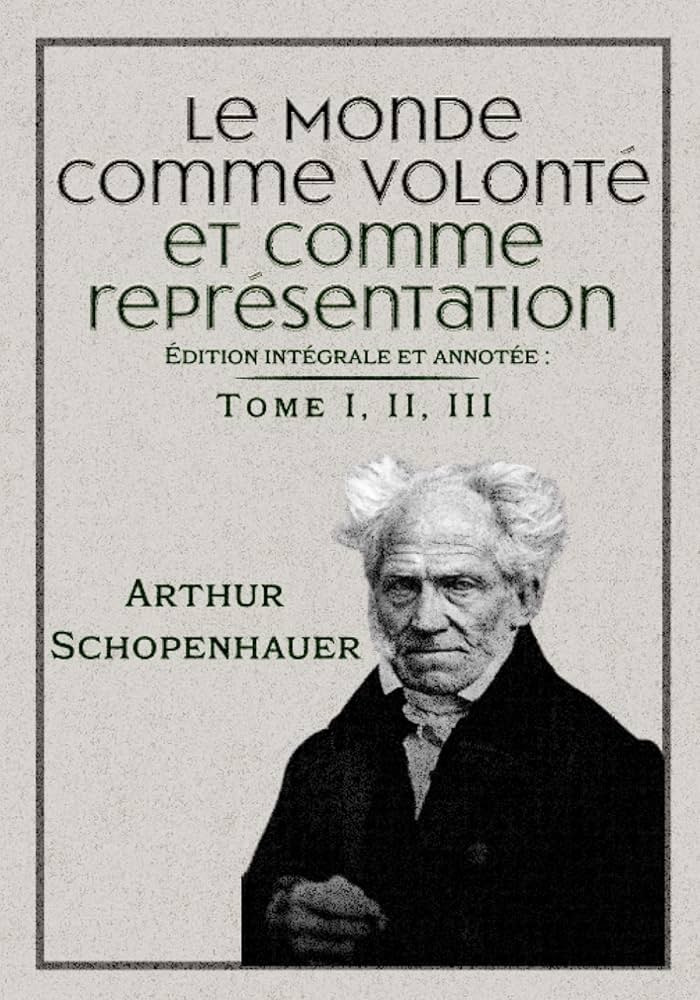
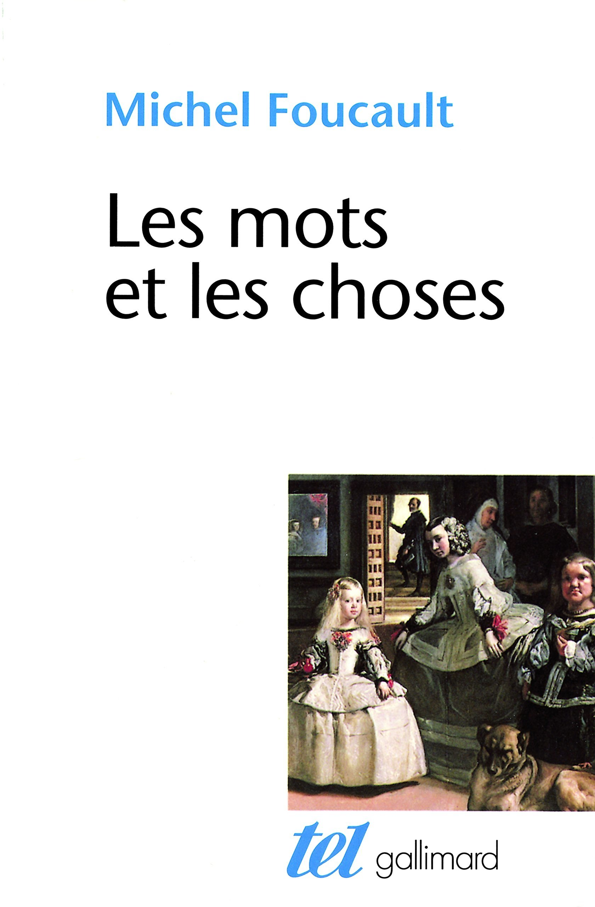
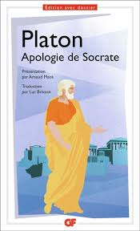
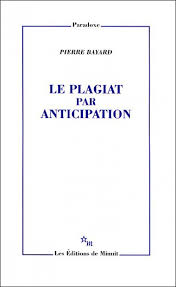

Livre I – Le monde comme représentation\n \n Le premier livre pose les fondements épistémologiques du système schopenhauerien. Sa thèse principale est que « le monde est ma représentation ». \n \n Autrement dit, toute réalité « objective » n’existe que comme phénomène dans l’esprit d’un sujet percevant. Pour Schopenhauer, cette proposition est une vérité absolue et universelle : tout ce qui existe n’existe que « pour la pensée » – en tant que contenu d’un esprit percevant. Ainsi, l’expérience du monde est toujours relative au sujet ; il n’y a pas de connaissance d’une « chose en soi » accessible directement, mais seulement de représentations (figures sensibles du réel). \n \n Schopenhauer suit ici la lignée kantienne (monde phénoménal vs nouménal), mais il tire la conséquence radicale que le sujet et l’objet ne sont jamais séparés en expérience : la distinction sujet–objet est la condition nécessaire de toute représentation. \n \n Arguments majeurs : Schopenhauer développe plusieurs arguments rigoureux pour établir cette thèse :\n \n Il insiste sur le principe de raison suffisante, selon lequel chaque connaissance s’appuie sur des formes a priori (espace, temps, causalité, etc.) inscrites dans l’esprit. \n \n Ce principe, appliqué aux phénomènes, montre que toute idée acquise relève d’une relation sujet–objet. La distinction fondamentale « objet/perçu » versus « sujet/percevant » est le cadre commun à toute représentation (abstraite ou intuitive, rationnelle ou empirique). \n \n Par conséquent, aucune vérité n’est plus certaine que celle-ci : « tout ce qui existe existe pour la pensée », c’est-à-dire que l’univers entier n’est objet qu’en regard d’un esprit percevant.\n \n Il souligne la vérité immédiate de l’expérience : même sans réflexion, tout être vivant voit que le monde n’existe pour lui qu’en tant qu’objet perçu par ses sens. Seul l’être humain parvient à formuler cela abstraitement, mais ce constat vaut pour tout être pensant. Le texte schopenhauerien affirme : « l’esprit philosophique est né » dès qu’on sait que l’on ne connaît « ni un soleil ni une terre, mais seulement un œil qui voit ce soleil, une main qui touche cette terre »\n \n En un mot, l’expérience interne (sentiment, volonté, etc.) sert de fondement : nous savons de façon immédiate que les contenus de conscience sont représentations.\n \n Il précise les quatre formes du principe de raison suffisante qui régissent la représentation : (1) la modalité du devenir (lois de la nature dans le temps), (2) la modalité de l’être (structure spatiale, mathématique), (3) la modalité de la connaissance (logique, causalité dans la pensée), et (4) la modalité de l’agir (motivation, action humaine). Ces formes se limitent au monde phénoménal. Ainsi, toute tentative de « sortir » du cadre sujet–objet revient à se situer hors de toute possibilité de connaissance objective. Schopenhauer en conclut que la conscience ne peut jamais atteindre l’essence ultime des choses par la connaissance pure.\n \n Au total, le livre I établit rigoureusement que le monde qui nous entoure n’a de sens qu’en relation à un esprit : il est pure représentation. Schopenhauer conserve les termes kantien (phénomène, chose en soi) et utilise l’expression de « représentation » (Vorstellung) pour marquer cette relativité cognitive. Cette vision subjective du réel conduit aussi à comprendre pourquoi, isolés dans nos représentations individuelles, nous ne reconnaissons pas immédiatement la volonté universelle qui les sous-tend\n \n \n \n Livre II – Le monde comme volonté\n \n Le deuxième livre expose la partie métaphysique : le monde n’est pas seulement représentation, il est en essence volonté. Schopenhauer identifie la chose en soi du monde avec une force unique, la volonté (Wille) aveugle et irrationnelle. L’être humain prend directement conscience de cette volonté en lui-même, par la conation et le vouloir : tout acte volontaire se manifeste dans le corps, et la volonté est reconnue comme l’objet immédiat le plus intime de la conscience individuelle\n \n Partant de cette introspection, il postule que cette volonté est universelle : ce que nous éprouvons comme volonté en nous est la même essence qui anime tous les phénomènes de la nature\n \n Arguments majeurs :\n Unité de la volonté : Schopenhauer montre que la volonté sous-tend à la fois la « matière brute » et la matière vivante. Après avoir reconnu que notre propre corps est l’expression phénoménale de notre volonté individuelle, on peut étendre cette intuition à tout l’univers. Il écrit qu’il n’existe qu’une seule essence à toutes les choses : « cette même volonté » qui, dans sa manifestation la plus apparente, porte le nom de volonté.\n \n Tous les objets, depuis la pierre la plus inerte jusqu’à l’animal ou l’être humain, sont des manifestations variées de cette volonté unique. Ainsi la volonté est à l’origine de tout ce qui se fait et se meurt, de l’apparition du monde phénoménal jusqu’aux plus hauts accomplissements de la vie humaine.\n Forces fondamentales comme objectivation de la volonté : La volonté universelle se révèle à travers les lois et les forces de la nature. Schopenhauer souligne que les forces dites primitives (par exemple l’élasticité, l’électricité, le magnétisme, la pesanteur, etc.) sont « en soi les manifestations immédiates de la volonté »\n \n Autrement dit, ces propriétés naturelles n’ont pas de cause ultime (elles sont grundlos, « sans raison ») et incarnent directement l’énergie aveugle de la volonté. Par exemple, l’électricité ou la gravité ne s’expliquent pas « scientifiquement » autrement que comme expressions de cette force vitale commune. Dans le texte courant, on lit : « l’électricité, le magnétisme… sont en soi les manifestations immédiates de la volonté ; comme telles, elles n’ont pas de raison (grundlos) »\n \n La science, étant soumise au principe de raison, ne peut que décrire leurs effets, mais l’essence qui opère en elles est la volonté universelle.\n Pessimisme et cycle du désir : Une conséquence cruciale de cette métaphysique est le pessimisme : la volonté est désir, et le désir est souffrance. Schopenhauer décrit la vie comme un enchaînement ininterrompu de besoins insatisfaits. Toute satisfaction n’apporte qu’une brève satiété, immédiatement remplacée par d’autres désirs. Il en conclut que « entre les désirs et leurs réalisations s’écoule toute la vie humaine. Le désir, de sa nature, est souffrance »\n \n Le plaisir lui-même n’est que l’absence momentanée de douleur. La vision d’un monde dominé par la volonté est donc profondément pessimiste : comme le note Wikipédia, « Schopenhauer présente un tableau pessimiste dans lequel les désirs inassouvis sont douloureux et le plaisir est simplement la sensation ressentie quand est supprimée la douleur. La plupart des désirs ne sont pas satisfaits, et ceux qui le sont sont remplacés par d’innombrables autres destinés à n’être jamais satisfaits »\n \n Cette thèse illustre que la volonté n’amène jamais un bonheur durable, mais uniquement des souffrances croissantes.\n Liberté et déterminisme : Schopenhauer nie la liberté du vouloir au sens ordinaire. La volonté est, au fond, grundlos : elle est en dehors du temps et de la causalité, sans cause ni condition préalable\n \n Par conséquent, les actions humaines sont entièrement déterminées par la volonté ; le libre-arbitre n’est qu’une illusion. (Cette question est approfondie dans le livre IV.)\n Le Livre II conclut donc que le fond du monde est la volonté : l’univers phénoménal n’est que sa manifestation plurielle. Schopenhauer déclare explicitement : « la volonté est l’essence intime de chaque phénomène » et qu’elle est commune à tous\n \n Cette conception fait de la volonté la clef de voûte du système : comprendre la nature, c’est saisir comment cette volonté aveugle se matérialise sous tant de formes.\n \n Livre III – Le monde comme représentation (esthétique)\n \n Le troisième livre explore la dimension esthétique et ouvre la voie à la libération partielle de la volonté. Schopenhauer y applique de nouveau la considération du monde comme représentation, mais cette fois indépendamment du principe de raison suffisante. L’objectif est de montrer que l’art révèle des vérités métaphysiques : l’objet de l’art, ou de la contemplation esthétique, est ce qu’il appelle l’Idée platonicienne. Thèse principale : Dans l’expérience esthétique, le sujet perçoit les objets non pas comme phénomènes particuliers, mais comme des incarnations d’Idées universelles, ce qui permet au sujet de s’abstraire de la volonté. Schopenhauer formule ainsi la thèse que l’art nous élève temporairement au rang de « sujet de la connaissance sans volonté ». Selon lui, un génie artistique est celui qui a la capacité de vivre et de communiquer cette expérience esthétique. Les idées de Platon sont comprises comme les aspects éternels et immuables de la réalité : un peintre de génie représente dans ses œuvres ces formes idéales sous-jacentes à tous les objets sensibles\n \n Arguments et développements :\n \n Expérience esthétique et contemplation désintéressée : Schopenhauer explique que, lors d’une véritable expérience esthétique, l’individu perçoit un objet « non pas en tant qu’objet individuel lui-même, mais en tant que forme platonicienne de l’objet »\n \n Le spectateur oublie son intérêt égoïste ; il n’est plus « désirant » mais simple témoin. Il devient pour un instant « le pur sujet de la connaissance sans volonté »\n \n L’objet contemplé révèle alors son Idée, c’est-à-dire son essence universelle et immuable. Cette suspension du vouloir est fondamentale : comme le résume Schopenhauer, on est « spectateur désintéressé du monde », jouissant d’une connaissance pure, « pure de tout vouloir ». Il identifie ce moment au véritable « plaisir artistique » : un plaisir qui naît de la jouissance du Beau et de la Vérité, sans aucun dessein égoïste\n \n Cette expérience est rare et exigeante, accessible seulement à ceux qui possèdent le génie ou un degré élevé de sensibilité artistique.\n Le génie créateur : Schopenhauer caractérise le génie comme la faculté de saisir les Idées dans le monde sensible et de les reproduire dans l’art. Le génie n’agit pas pour un but utilitaire ; il crée sans réfléchir à un résultat particulier. Par exemple, un peintre de nature morte hollandais (un thème qu’il loue) fait ressortir dans des objets ordinaires une beauté objective et universelle, détachée de tout désir\n \n Inversement, il critique les œuvres qui excitent simplement les désirs ordinaires (ex. nus sculpturaux trop érotiques), car celles-ci nous ramènent au cycle de la volonté au lieu de nous en éloigner\n \n Hiérarchie des arts et rôle de la musique : Schopenhauer classe les arts selon leur capacité à exprimer les Idées et la volonté. Les arts plastiques et littéraires représentent des Idées particulières (formes du monde), mais la musique tient une place suprême car elle est la manifestation directe de la volonté en soi. Contrairement aux autres arts qui ne copient que l’Idée du monde, la musique, selon Schopenhauer, représente directement la force volontariste primordiale. Il écrit que « la musique est une copie directe de la volonté, entendue comme chose en soi »\n \n Cela explique pourquoi la musique exerce une telle puissance émotionnelle : elle nous touche à travers la volonté même, sans passer par l’entendement discursif.\n Effet rédempteur de l’esthétique : L’étude esthétique prépare en filigrane l’éthique. En effet, chaque moment de contemplation désintéressée brise le pouvoir de la volonté : il nous rend « moins esclaves du vouloir » et nous donne un aperçu de la possibilité de vivre sans souffrance, à travers la liberté de l’esprit. L’art offre ainsi une négation temporaire de la volonté : il nous fait ressentir qu’une autre forme de connaissance – pure, sans désir – est possible. Néanmoins, Schopenhauer précise que ces expériences esthétiques, aussi précieuses soient-elles, restent fugaces. Elles ne suppriment pas définitivement la volonté, mais elles ouvrent une voie vers la compréhension philosophique du monde et de la souffrance universelle.\n \n En somme, le livre III montre que la beauté esthétique est le reflet des Idées éternelles, et que l’artiste-génie réalise la plus haute forme de libération momentanée : l’abolition de son vouloir propre dans la contemplation pure\n \n Livre IV – Le monde comme volonté (éthique)\n \n Le quatrième livre applique la métaphysique de la volonté à l’éthique et à la pratique de la vie. Son propos principal est de décrire le comportement éthique comme affirmation ou négation de la volonté de vivre, après que l’individu a pris conscience de sa propre essence voluntariste\n \n Schopenhauer distingue deux types de conduites : l’affirmation de la volonté (conduite égoïste, continue volonté) et la négation de la volonté (renoncement, ascèse). Il expose ce dualisme sans formuler de commandement moral impératif : il se contente d’analyser descriptivement ces deux attitudes. Thèses et arguments :\n Affirmation de la volonté et égoïsme : L’affirmation de la volonté de vivre se manifeste par le désir de satisfaire ses propres besoins et de dominer les autres. Cette attitude découle de l’illusion de l’individualité : chaque être oublie que sa volonté n’est qu’une facette de la volonté universelle. Schopenhauer constate que lorsque l’on fait du mal à autrui, on ignore que l’on se fait en réalité du mal à soi-même métaphysiquement. Il formule une idée radicale : « la même personne métaphysique est à la fois criminelle et victime ». Ainsi, toute injustice infligée est aussitôt répercutée sur le même fond de volonté. Il en conclut que la justice est déjà réalisée au moment où le crime est commis : la volonté s’autoblessera inévitablement.\n \n Négation de la volonté et compassion : La négation de la volonté s’ouvre quand l’individu perçoit autrui non plus comme un pur objet de désir, mais comme porteur de la même volonté que lui. La compassion joue ici un rôle clé : elle naît quand on transcende l’illusion de l’individualité et qu’on éprouve réellement la souffrance d’autrui comme sienne\n \n Ce contact empathique révèle l’unité métaphysique profonde des êtres et prépare à renoncer au désir égoïste. Schopenhauer n’invoque pas de libre arbitre ; il affirme au contraire que la volonté est fondamentalement aveugle et déterminée (aucun libre choix n’y existe)\n \n Cependant, on peut diminuer graduellement notre propre « vouloir-vivre » par l’ascèse. L’ascétisme, c’est-à-dire le renoncement volontaire à nos désirs habituels, est selon lui le moyen véritable de s’affranchir de la souffrance. Il oppose l’ascétisme au suicide : ce dernier ne tue qu’un phénomène particulier de la volonté (un individu), alors que l’ascète, par une discipline de vie, affaiblit lentement sa volonté individuelle\n \n En effet, « le suicide violent est en quelque sorte une affirmation de la volonté » (un dernier acte de vouloir), alors que l’abstinence volontaire est la seule négation authentique.\n Conclusion pratique : Schopenhauer conclut qu’on ne peut supprimer entièrement le désir sans sombrer dans le néant (l’ennui suprême). En revanche, une vie supportable consiste à garder lucidité sur sa condition désirable insatisfiable. Il recommande de se comporter en « observateur détaché » de sa propre volonté\n \n En restant conscient que la plupart des désirs resteront inassouvis, on peut réduire la souffrance mentale. Il n’y a pas d’idéal moral transcendant (pas de libre arbitre ni de commande divine) ; en dernière analyse, chaque être est poussé par la même volonté unique. Par son éthique, Schopenhauer montre que l’élévation morale passe par la reconnaissance universelle de cette volonté commune : la négation de la volonté (par la compassion ou l’ascèse) nous libère de l’isolement égoïste et nous fait participer à la joie inexistante de la « vie » englobante.\n Vers un au-delà de la représentation : Le livre IV sert également de transition à une perspective ascétique finale. Schopenhauer formule l’objectif moral comme suit : « Arrivant à se connaître elle-même, la volonté de vivre s’affirme, puis se nie »\n \n Autrement dit, après avoir pris conscience de sa nature volontariste, l’humanité pourra espérer dépasser cette identification au vouloir en le niant progressivement. Comme le rappelle la préface générale, « la métaphysique de Schopenhauer est étroitement liée à son éthique » : l’art (livre III) fournissait une négation provisoire du vouloir, tandis que l’éthique (livre IV) esquisse la voie pratique d’une négation durable\n \n \n \n En conclusion, Le Monde comme volonté et comme représentation propose un système cohérent :\n Le Livre I établit que notre connaissance est limitée aux représentations (le monde pour nous).\n Le Livre II montre que l’être réel derrière ces représentations est la volonté universelle, source aveugle de tout désir.\n Le Livre III indique que l’art permet d’expérimenter un état de conscience désintéressé (subjectivité sans volonté), offrant un aperçu de l’Idée platonicienne.\n Le Livre IV en tire les leçons éthiques : soit on affirme la volonté (égoïsme, souffrance perpétuelle), soit on la nie (compassion, ascèse) afin de sortir du cycle du désir.\n Cette structure rend compte de l’esprit de Schopenhauer : la connaissance scientifique et esthétique menant à la sagesse morale. Tout au long de l’ouvrage, Schopenhauer conserve un langage rigoureux empreint de ses concepts clés (« volonté », « représentation », « idée », « egoïsme », « ascèse », etc.), garantissant la fidélité à son vocabulaire philosophique. Les transitions entre les parties sont logiques : la constitution phénoménale (I) conduit à la réflexion métaphysique (II), qui à son tour justifie l’expérience esthétique (III) et éclaire enfin l’attitude éthique (IV).

Foucault identifie quatre formes principales par lesquelles la pensée ancienne établissait des liens entre les choses :\n \n La convenance\n → Les choses proches dans le monde s'attirent naturellement (ex. : les métaux et les planètes ont des propriétés communes).\n → L’ordre du monde est vu comme une grande chaîne de ressemblances continues.\n L'âme et le corps, par exemple, sont deux fois convenants : il a fallu que le péché ait rendu l'âme épaisse, lourde et terrestre, pour que Dieu la place au plus creux de la matière.Mais par ce voisinage, l'âme reçoit les mouvements du corps, et s'assimile à lui, tandis que « le corps s'altère et se corrompt par les passions de l'âme.\n \n C’est une ressemblance par proximité, une harmonie naturelle entre des choses qui sont proches ou voisines dans le monde.\n Elle repose sur un accord immédiat entre les êtres : ils vont ensemble, ils se conviennent.\n \n L’émulation\n C’est une ressemblance à distance, un miroir entre les ordres.\n Des réalités éloignées s’imitent, comme si le ciel et la terre se répondaient.\n L’homme vu comme microcosme (petit monde) qui reflète le macrocosme (l’univers) :\n Le cœur = le soleil\n Les poumons = l’air\n Le sang = les astres en mouvement\n \n L’analogie\n → C’est une ressemblance dans la structure des rapports, plus abstraite.\n Ce n’est pas que deux choses se ressemblent, mais que leurs relations sont comparables.\n → Elle permet de penser les structures complexes du monde.\n \n La sympathie et l’antipathie\n → Les choses s’attirent ou se repoussent mystérieusement.\n → C’est le moteur secret qui explique les relations dans l’univers.\n Le fer attire la pierre magnétique : c’est de la sympathie.\n Le serpent et le cerf s’évitent naturellement : c’est de l’antipathie.\n \n Ces quatre figures forment la trame du savoir à la Renaissance : le monde est lisible car tout y est relié par des signes que l’homme peut déchiffrer.\n \n Le langage n’est pas encore séparé du monde, il exprime ces rapports. Il est vu comme naturel, relié aux choses qu’il nomme (ex. : on cherche les « étymologies vraies » pour découvrir les secrets du monde). Lire, parler, connaître, imiter : ce sont des activités inséparables. Le monde est un livre à lire, une prose sacrée. Les textes anciens, les plantes, les animaux, les étoiles : tout est porteur de signes à interpréter.\n \n À la Renaissance, on connaissait en lisant le monde comme un texte plein de signes et de similitudes.\n \n Au tournant du XVIIe siècle, cette manière de penser va s’effondrer. Le langage va devenir un système de signes séparé des choses. La ressemblance va être remplacée par l’analyse, la classification, la mesure. C’est le passage vers une pensée scientifique moderne, fondée non sur des similitudes mais sur des lois objectives. À cette époque, la connaissance ne passe plus par la reconnaissance de ressemblances, mais par la construction d’un ordre représentatif rigoureux. À l’âge classique, on connaît en représentant le monde : c’est-à-dire en le distribuant, classant, ordonnant selon des relations visibles, mesurables et comparables.\n \n Foucault définit la représentation comme une opération composée de :\n \n Identification : nommer une chose.\n Distinction : la différencier des autres.\n Comparaison : établir ses rapports avec d’autres.\n Mesure : évaluer ses propriétés.\n \n Dans l’épistémè classique, le savoir repose sur la représentation. Le langage est alors vu comme un système de signes destiné à représenter des idées clairement et distinctement. Il ne participe plus du monde (comme à la Renaissance), mais sert à ordonner la pensée.\n \n Cela donne naissance à la grammaire universelle (ex. : Port-Royal) qui repose sur l’idée que :\n \n Toutes les langues ont une structure logique commune. Le verbe être, le sujet, le prédicat, sont considérés comme des invariants logiques universels.\n \n Vers la fin du XVIIIe siècle, cette fonction représentative du langage commence à s’effondrer.\n \n Le langage n’est plus garant de vérité, il devient une réalité autonome, historique. Le langage devient un objet de savoir empirique : on commence à l’étudier dans son histoire, ses transformations, ses mutations. \n C’est la naissance de la philologie, qui observe :\n \n les évolutions grammaticales,\n les racines étymologiques,\n les structures phonétiques\n \n Désormais, les mots n’éclairent plus le monde : ils y appartiennent.\n \n Le langage n’est plus un outil extérieur : il est dans le monde, dans l’histoire, soumis aux lois du vivant. Il faut alors interroger comment il s’est formé, où il s’est transformé, et pourquoi il change. Il devient un objet à part entière, situé au milieu des choses, avec sa propre histoire.\n \n 1. Le langage devient objet de savoir Il n’est plus seulement outil de pensée, mais une chose qu’on analyse historiquement.\n 2. La langue devient structure autonome Elle ne dépend pas de la volonté du locuteur, mais de lois internes.\n 3. Le langage a une histoire, une généalogie Les mots évoluent, se transforment, migrent → l’homme est pris dans une langue qu’il n’invente pas.\n \n Désormais :\n \n Il y a des disciplines scientifiques (philologie, linguistique historique, anthropologie du langage) qui peuvent objectiver l’homme parlant.\n Il y a des outils pour l’interroger en tant qu’être inscrit dans une langue, et non plus comme simple sujet pensant.\n Cela fonde la linguistique, la psychologie du langage, mais aussi la psychanalyse, l’ethnologie…\n \n Dès lors que le langage n’est plus pensé comme outil transparent, mais comme structure historique et symbolique, l’homme devient un être traversé par des formes qu’il ne maîtrise pas — ce qui rend possible l’émergence des sciences humaines qui l’analysent comme un objet.\n \n Foucault montre que la notion d’« homme » au 19 ème siècle est comme une synthèse de trois dimensions :\n \n 1) vivant biologique. Foucault montre que ce déplacement (par rapport à une tradition où l'homme était essentiellement défini comme âme ou conscience) est lié à la constitution de la biologie comme science empirique, qui fait de la vie un domaine observable — y compris la vie humaine.\n 2) sujet parlant. Dans ce cadre, l'homme n'est plus seulement sujet pensant (comme chez Descartes), mais sujet signifiant, conditionné par des lois du langage que la linguistique cherche à expliciter.\n 3) travailleur social. L’homme devient un agent de production, inscrit dans une organisation sociale. Il est étudié non plus seulement comme sujet moral ou juridique, mais comme force de travail, inscrit dans des rapports de production, de consommation et d’échange. \n \n Si le langage était transparent, on pourrait penser la vie par la seule parole rationnelle.\n Mais en réalité, la biologie moderne montre que l’homme est un corps vivant qui ne dit pas tout de lui-même.\n \n Les sciences humaines naissent de cette tension entre :\n \n les savoirs qui objectivent l’homme (comme vivant, parlant, travaillant),\n et la philosophie qui continue de le penser comme sujet universel, libre et réfléchi.\n \n Avant cela :\n \n Il n’y avait pas encore de figure épistémique de l’"homme" unifié :\n \n On parlait de l’âme (théologie),\n de la nature humaine (philosophie morale),\n de l’individu (juridique ou éthique),\n mais jamais de l’homme comme objet central de savoir empirique, à la fois corps, langage, travail.\n \n L’homme moderne est conçu comme un sujet-objet : il se pense lui-même, se connaît, se décrit. Cette auto-réflexivité donne naissance aux sciences humaines : psychologie, sociologie, anthropologie, économie, philologie, etc. \n \n Mais ces sciences reposent sur une figure fendue : l’homme est à la fois empirique et transcendantal, fini et illimité, conscient et inconscient. Ce qui rend cette figure fragile, c’est qu’elle repose sur une contradiction permanente :\n \n Il est objet de savoir (on l’analyse biologiquement, économiquement, psychologiquement),\n Mais aussi sujet du savoir (c’est lui qui observe, mesure, pense).\n \n Il est pris dans un doublet empirico-transcendantal :\n Empirique, car il fait partie du monde ;\n Transcendantal, car il rend le monde pensable.\n \n Cela engendre les sciences humaines, qui tentent de penser un être qui se pense lui-même — ce que Foucault juge épistémologiquement instable.\n \n Foucault montre alors trois fausses promesses de l’humanisme :\n 1. L’homme est mesurable → Faux\n Les sciences humaines prétendent objectiver l’homme.\n Mais il échappe toujours à la mesure, car il est aussi celui qui donne sens à ce qu’il mesure.\n \n 2. L’homme est transparent à lui-même → Faux\n Depuis Descartes, on suppose que la conscience peut se connaître elle-même.\n Mais l’inconscient, l’histoire, le langage, montrent que beaucoup de choses échappent à notre propre regard.\n \n 3. L’homme est un fondement stable → Faux\n Les disciplines modernes le prennent pour point de départ (la conscience, le sujet, l’intention…).\n Mais l’histoire archéologique montre que ce point de départ est une invention récente, donc fragile.
Le texte explore la notion de sacré et remet en question l'idée que la personne humaine en elle-même est sacrée. L'auteur propose que ce qui est sacré réside plutôt dans ce qui est impersonnel chez l'être humain, comme la capacité à ressentir la douleur et l'injustice. Cette capacité, qui se manifeste par un cri intérieur, est universelle et ne dépend pas de la personne ou de ses désirs.\n \n Il faut enfin un système d’institutions amenant le plus possible aux fonctions de commandement les hommes capables et désireux de l’entendre et de le comprendre\n \n L'auteur critique l'idée que les facultés artistiques et scientifiques soient sacrées en soi, car elles peuvent souvent servir des intérêts personnels et ne pas contribuer au bien. Il distingue ces réalisations de celles qui se situent dans un domaine anonyme et impersonnel, où règnent la vérité et la beauté, et qui sont, selon lui, les seules choses véritablement sacrées.\n \n La vérité et la beauté, impersonnelles, sont sacrées.\n L'accès à l'impersonnel se fait par la solitude et l'attention.\n Les collectifs n'y ont pas accès et idolâtrent souvent le personnel.\n La personne est soumise au collectif et n'a pas de droit naturel.\n L'impersonnel peut s'opposer au collectif pour protéger la personne.\n \n Les travailleurs devraient se rebeller contre leurs conditions, non pour des revendications salariales, mais pour protéger leur âme. Le mouvement ouvrier a échoué car il s'est basé sur l'idée de droit, qui est commerciale et liée à la force. Si l'on dit à quelqu'un qui soit capable d'entendre : “Ce que vous me faites n'est pas juste”, on peut frapper et éveiller à la source l'esprit d'attention et d'amour. Il n'en est pas de même de paroles comme : “J'ai le droit de...”, “Vous n'avez pas le droit de...” ; elles enferment une guerre latente et éveillent un esprit de guerre. La notion de droit, mise au centre des conflits sociaux, y rend impossible de part et d'autre toute nuance de charité.\n \n La notion de droit entraîne naturellement à sa suite, du fait même de sa médiocrité, celle de personne, car le droit est relatif aux choses personnelles. Il est situé à ce niveau.\n \n Certains mots, comme "Dieu", "vérité", "justice", "amour" et "bien", ont un pouvoir d'illumination et d'élévation.\n \n Des mots comme "droit", "démocratie" et "personne" sont plus commodes mais moins puissants. Ils sont utiles dans le domaine des institutions moyennes, mais ne suffisent pas à inspirer les hommes.\n \n La protection de la personne et la démocratie exigent l'incarnation du bien supérieur dans la vie publique. Ce bien supérieur est impersonnel et sans relation avec aucune forme politique. Il se reflète dans la justice, la vérité et la beauté. Seuls ces idéaux peuvent inspirer ceux qui sont prêts à se sacrifier.\n \n En résumé, la personne est sacrée, pour ce qu'elle renferme en elle d'impersonnel... c'est là la base de l'éthique chrétienne de Weil. Et le collectif seul et son arsenal d'institutions ne peuvent suffire pour prémunir de la laideur, du mensonge et de l'injustice.

I. PREMIÈRE PARTIE : PLAIDOYER DE SOCRATE\n \n A. INTRODUCTION\n \n 1. Ouverture du discours\n o Socrate exprime son incertitude quant à l'effet de l'accusation sur le jury.\n o Il souligne l'éloquence trompeuse de ses accusateurs.\n o Il met en avant sa propre simplicité et son engagement à dire la vérité.\n \n 2. Justification de son style oratoire\n \n o Socrate explique qu'il ne maniera pas la rhétorique sophistique.\n o Il demande au jury de se concentrer sur le fond de son discours plutôt que sur la forme.\n o Il souligne son âge avancé et son inexpérience des tribunaux comme raisons de son style simple.\n \n 3. Double accusation\n o Socrate distingue deux types d'accusateurs : les anciens et les nouveaux.\n o Il insiste sur la nécessité de répondre d'abord aux accusations plus anciennes et plus enracinées.\n \n B. RÉPONSE AUX ANCIENNES ACCUSATIONS\n \n 1. Nature des anciennes accusations\n o Socrate rappelle les accusations répandues depuis longtemps : athéisme, études des phénomènes naturels, sophiste corrompant la jeunesse.\n o Il souligne la difficulté de se défendre contre des accusations vagues et anonymes.\n \n 2. Réfutation de l'accusation d'athéisme\n o Socrate nie s'intéresser aux sciences naturelles et aux phénomènes célestes.\n o Il affirme croire aux dieux, contrairement à ce que ses accusateurs prétendent.\n 3. Réfutation de l'accusation de sophiste\n o Socrate distingue sa méthode de celle des sophistes qui enseignent contre rémunération.\n o Il se réfère à l'oracle de Delphes pour expliquer l'origine de sa réputation de sagesse.\n o Il raconte sa quête pour comprendre l'oracle, en interrogeant ceux qui étaient réputés savants (hommes politiques, poètes, artisans).\n o Il conclut que sa "sagesse" réside dans la conscience de sa propre ignorance, contrairement à ceux qui prétendent savoir sans savoir.\n \n C. RÉPONSE AUX NOUVELLES ACCUSATIONS\n \n 1. Présentation des nouvelles accusations\n o Socrate identifie Mélétos comme le principal accusateur derrière les nouvelles accusations.\n o Il énumère ces accusations : corruption de la jeunesse, impiété, introduction de nouvelles divinités.\n \n 2. Réfutation de l'accusation de corruption de la jeunesse\n o Socrate interroge Mélétos sur la nature de la corruption et sur qui serait capable d'améliorer les jeunes.\n o Il démontre l'incohérence de Mélétos en le poussant à admettre que tout le monde, sauf Socrate, améliore les jeunes.\n o Il souligne l'absurdité de l'idée qu'il corrompe volontairement les jeunes, car cela lui nuirait également.\n \n 3. Réfutation de l'accusation d'impiété\n 4. \n o Socrate interroge Mélétos sur la nature de son impiété.\n o Il démontre que Mélétos se contredit en l'accusant à la fois d'athéisme et d'introduire de nouvelles divinités.\n o Il affirme sa croyance en la puissance divine et aux démons, ce qui implique une croyance aux dieux.\n \n 4. Conclusion du plaidoyer\n \n o Socrate réaffirme son innocence et attribue les accusations à la calomnie et à l'envie.\n o Il avertit le jury que sa condamnation ne le nuira pas lui, mais nuira à la cité en la privant d'un bienfaiteur.\n o Il se compare à un taon envoyé par le dieu pour stimuler la cité, et affirme qu'il continuera sa mission même s'il est acquitté.\n o Il refuse de recourir à des moyens dégradants pour obtenir l'acquittement, comme supplier ou faire appel à la pitié.\n \n II. DEUXIÈME PARTIE : DE LA PEINE ENCOURUE PAR SOCRATE\n \n A. Proposition de peine par Mélétos : la mort\n • Mélétos propose la peine de mort pour Socrate.\n B. Contre-proposition de Socrate\n \n 1. Justification de sa demande\n \n o Socrate explique qu'il mérite une récompense plutôt qu'une punition pour ses services à la cité.\n o Il propose d'être nourri au Prytanée, un honneur réservé aux citoyens les plus méritants.\n o Il souligne l'importance de son travail philosophique et son dédain pour les préoccupations matérielles.\n \n 2. Réfutation d'autres peines possibles\n \n o Socrate rejette l'idée de l'emprisonnement ou d'une amende, car il n'a pas d'argent.\n o Il rejette également l'exil, car il continuerait sa mission philosophique ailleurs et serait de nouveau persécuté.\n 3. Engagement à poursuivre sa mission\n o Socrate affirme qu'il continuera à philosopher même s'il est acquitté, car c'est son devoir envers le dieu.\n o Il souligne l'importance de l'examen de soi et de la recherche de la vertu.\n \n III. TROISIÈME PARTIE : ALLOCUTION DU CONDAMNÉ À SES JUGES\n \n A. Acceptation de la condamnation\n \n 1. Socrate accepte sereinement le verdict\n o Il n'est pas surpris par sa condamnation, mais plutôt par la faible majorité.\n o Il refuse de blâmer ceux qui l'ont condamné.\n \n 2. Réaffirmation de ses principes\n o Il maintient qu'il préfère mourir en ayant défendu ses principes plutôt que de vivre en les reniant.\n o Il souligne l'importance de la justice et de la vertu, même face à la mort.\n B. Avertissement aux juges\n \n 1. Prédiction d'un châtiment divin\n o Socrate prédit que ses juges seront punis par le dieu pour l'avoir condamné injustement\n o Il affirme que d'autres, plus jeunes et plus nombreux, continueront sa mission d'examen critique.\n \n 2. Exhortation à l'amélioration morale\n o Il demande à ses juges de se préoccuper davantage de leur âme et de leur vertu que de biens matériels.\n o Il leur demande de punir ses propres fils s'ils se détournent de la vertu.\n C. Conclusion\n \n 1. Acceptation sereine de la mort\n o Socrate se prépare à mourir avec calme et dignité\n o Il laisse à la divinité le soin de décider si son sort ou celui de ses juges est le meilleur\n
.jpg)
• Première définition de la science : La science comme sensation\n \n 1. Socrate engage Théétète dans une discussion sur la nature de la science.\n \n o Il pose la question fondamentale : "Qu'est-ce que la science ?"\n o Il invite Théétète à exprimer sa propre compréhension de ce concept complexe.\n \n 2. Théétète propose que la science est la sensation, reprenant ainsi la thèse de Protagoras : "L'homme est la mesure de toutes choses" (= la doxa).\n o Théétète suggère que la science se réduit à la perception sensorielle, chaque individu étant la mesure de sa propre réalité.\n o Cette définition s'inscrit dans la tradition relativiste de Protagoras, qui remet en question l'existence d'une vérité objective.\n \n 3. Socrate examine cette thèse en utilisant des exemples de perceptions variables (vent, couleurs).\n o Il met en évidence la relativité des perceptions sensorielles en montrant que le même vent peut sembler chaud à l'un et froid à l'autre.\n o Il souligne que les couleurs peuvent être perçues différemment selon les individus et les circonstances.\n \n 4. Ils concluent que si la sensation est la science, alors la perception est toujours vraie, ce qui semble paradoxal.\n o Si la science se limite à la sensation, alors chaque perception individuelle est nécessairement vraie pour celui qui la perçoit.\n o Cette conclusion soulève des difficultés, car elle implique que la vérité est relative et subjective, ce qui contredit l'idée d'une connaissance universelle et objective.\n \n 5. Socrate introduit la doctrine d'Héraclite sur le flux universel pour renforcer l'idée que la perception est relative.\n o Il évoque la philosophie d'Héraclite, selon laquelle tout est en perpétuel changement, pour appuyer l'idée que la réalité est fluide et insaisissable.\n o Cette doctrine renforce la thèse relativiste en suggérant que la perception est constamment en mouvement, rendant difficile l'établissement d'une vérité stable.\n • Objection à la première définition et introduction de l'art maïeutique\n \n 1. Socrate soulève des objections à la thèse de Protagoras, notamment en ce qui concerne les rêves, les maladies et les erreurs de perception\n o Il met en évidence les limites de la perception sensorielle en montrant qu'elle peut être trompeuse dans certaines situations, comme les rêves, les hallucinations ou les illusions d'optique\n o Il souligne que la maladie peut altérer la perception, remettant en question l'idée que la sensation est toujours vraie\n \n 2. Théétète reconnaît la difficulté de distinguer le rêve de la veille et la vérité de l'erreur\n o Il admet que la frontière entre le rêve et la réalité peut être floue, et qu'il est parfois difficile de discerner le vrai du faux\n o Cette prise de conscience ouvre la voie à une réflexion plus approfondie sur la nature de la connaissance et de la vérité\n \n 3. Socrate présente son "art maïeutique", l'art d'accoucher les esprits, pour aider Théétète à clarifier ses idées\n o Il explique sa méthode philosophique, qui consiste à poser des questions et à guider l'interlocuteur dans sa propre réflexion, afin de l'aider à "accoucher" de ses idées et à les examiner de manière critique\n o Cette approche pédagogique vise à stimuler l'autonomie intellectuelle et à favoriser la recherche de la vérité par soi-même\n \n 4. Il souligne l'importance de distinguer les opinions chimériques des opinions valables\n o Il met en garde contre les opinions superficielles et illusoires, qui peuvent entraver la quête de la vérité\n o Il encourage Théétète à développer un esprit critique et à rechercher des opinions fondées sur la raison et l'examen attentif des faits\n \n • Deuxième définition de la science : La science comme opinion vraie\n \n 1. Théétète propose une nouvelle définition : la science est l'opinion vraie\n o Après avoir abandonné la première définition, Théétète avance une nouvelle proposition, suggérant que la science consiste à avoir des opinions conformes à la réalité\n \n 2. Socrate remet en question cette définition en montrant que les juges peuvent avoir des opinions vraies sans avoir la science des faits\n o Il utilise l'exemple des juges qui, bien que prononçant des verdicts justes, peuvent le faire sur la base de témoignages et de preuves, sans avoir une connaissance directe des faits\n o Cet exemple illustre que l'opinion vraie, même si elle correspond à la réalité, ne garantit pas nécessairement la possession de la science\n \n 3. Théétète se souvient d'une distinction entre l'opinion vraie avec raison (science) et l'opinion vraie sans raison (non-science)\n o Il se remémore une discussion antérieure qui établit une distinction cruciale entre deux types d'opinions vraies : celles qui sont fondées sur la raison et la compréhension, et celles qui sont le fruit du hasard ou de la simple croyance\n o Cette distinction ouvre la voie à une troisième définition de la science, qui intègre la notion de "raison" ou "logos". Le logos apporte la compréhension, l'explication et la capacité de rendre compte de son opinion.\n \n • E. Troisième définition de la science : La science comme opinion vraie accompagnée de raison\n \n 1. Socrate examine la notion de "raison" (logos)\n \n o Il entreprend une analyse approfondie du concept de "raison", qui est central dans la nouvelle définition de la science proposée par Théétète\n o Il cherche à clarifier ce que l'on entend par "raison" et comment elle se distingue de la simple opinion\n \n 2. Il propose trois interprétations possibles de la raison\n \n o a. L'expression de la pensée par la parole : la raison comme capacité à communiquer et à expliquer ses idées de manière claire et cohérente\n o b. La décomposition d'un objet en ses éléments : la raison comme capacité à analyser et à comprendre la structure d'un objet ou d'un concept, en identifiant ses parties constitutives\n o c. La capacité de distinguer un objet de tous les autres : la raison comme capacité à définir et à identifier un objet de manière précise, en le différenciant de tout autre objet similaire\n \n • F. Examen de la deuxième interprétation de la raison\n \n 1. Socrate et Théétète discutent de l'idée que connaître un objet, c'est connaître ses éléments constitutifs\n \n o Ils explorent l'idée que la connaissance d'un tout repose sur la connaissance de ses parties, en utilisant l'exemple des lettres et des syllabes\n o Ils se demandent si la connaissance des lettres suffit pour connaître les syllabes, et si la connaissance des syllabes suffit pour connaître les mots\n 2. Ils utilisent l'exemple des lettres et des syllabes pour montrer que la connaissance des éléments est nécessaire pour connaître le tout\n o Ils analysent la relation entre les lettres et les syllabes, en soulignant que la connaissance des lettres est indispensable pour lire et comprendre les syllabes\n o Ils montrent que la syllabe n'est pas simplement une juxtaposition de lettres, mais une entité nouvelle qui émerge de leur combinaison\n 3. Ils concluent que la syllabe n'est pas simplement la somme de ses éléments, mais une entité unique\n o Ils reconnaissent que la syllabe possède une réalité propre, qui dépasse la simple addition de ses éléments constitutifs\n o Cette conclusion remet en question l'idée que la connaissance d'un tout se réduit à la connaissance de ses parties, et ouvre la voie à une réflexion plus complexe sur la nature de la connaissance\n \n • G. Examen de la troisième interprétation de la raison\n 1. Socrate examine l'idée que la raison est la capacité de distinguer un objet de tous les autres\n o Il explore l'idée que la connaissance d'un objet implique la capacité à le définir et à le différencier de tout autre objet, en utilisant l'exemple du soleil\n 2. Il utilise l'exemple de la définition du soleil comme "le plus brillant des corps célestes"\n o Il analyse cette définition, en montrant qu'elle ne capture pas l'essence du soleil, mais seulement une de ses caractéristiques distinctives\n o Il souligne que cette définition ne permet pas de comprendre la nature profonde du soleil, ni de le distinguer de manière absolue de tout autre objet céleste\n 3. Il montre que cette définition ne donne pas la véritable essence du soleil, mais seulement une caractéristique distinctive\n o Il met en évidence les limites de la définition par la différence, en soulignant qu'elle ne fournit qu'une connaissance partielle et relative de l'objet\n 4. Ils concluent que l'opinion vraie accompagnée de la connaissance de la différence ne suffit pas à définir la science.\n o Ils reconnaissent que la troisième interprétation de la raison, bien qu'utile, ne permet pas de définir la science de manière complète et satisfaisante\n o Ils constatent que la connaissance de la différence, bien qu'importante, ne garantit pas la possession de la science, car elle peut être associée à une opinion vraie sans véritable compréhension.\n \n • H. Retour sur la définition de l'opinion fausse\n \n 1. Socrate revient sur la question de l'opinion fausse, soulignant l'importance de la définir avant de définir la science.\n o Il propose de revenir à la question de l'opinion fausse, en considérant qu'il est essentiel de comprendre ce qu'est l'erreur avant de pouvoir définir la science, qui est la connaissance vraie\n o Il suggère une nouvelle approche pour aborder cette question, en se concentrant sur la relation entre la perception et la connaissance\n 2. Il propose une nouvelle approche pour expliquer l'opinion fausse, en distinguant entre ce que l'on sait et ce que l'on perçoit\n o Il introduit une distinction fondamentale entre deux types de contenus mentaux : les objets de la connaissance (ce que l'on sait) et les objets de la perception (ce que l'on perçoit)\n o Il suggère que l'opinion fausse résulte d'une confusion entre ces deux types de contenus\n 3. Il utilise l'exemple de la confusion entre deux personnes pour illustrer comment l'opinion fausse peut se produire\n \n o Il présente un exemple concret pour illustrer son propos : la confusion entre deux personnes que l'on connaît, Théodore et Théétète\n o Il montre que cette confusion peut conduire à des jugements erronés, comme attribuer à Théodore une action réalisée par Théétète\n 2. Ils concluent que l'opinion fausse résulte d'une mauvaise association entre la perception et la connaissance\n o Ils arrivent à la conclusion que l'opinion fausse se produit lorsque l'on associe incorrectement un objet de la perception à un objet de la connaissance\n o Cette explication permet de comprendre comment l'erreur est possible, même lorsque l'on possède une connaissance préalable des objets en question\n \n • I. La cire et les empreintes : une analogie pour la mémoire et la connaissance\n 1. Socrate introduit l'analogie de la cire pour expliquer la mémoire et la connaissance\n o Il propose une analogie pour illustrer le fonctionnement de la mémoire et de la connaissance : l'âme est comparée à un bloc de cire, sur lequel les sensations et les pensées laissent des empreintes\n o Cette analogie permet de visualiser le processus d'acquisition et de stockage des informations dans l'esprit\n 2. Il décrit comment les sensations et les conceptions laissent des empreintes dans la cire de l'âme\n o Il explique que chaque perception et chaque pensée laisse une trace dans la cire, comme un sceau qui imprime sa marque sur une surface malléable\n o Ces empreintes constituent la mémoire, qui permet de se souvenir des expériences passées et des connaissances acquises\n 3. Il explique que la qualité de la cire influence la capacité d'apprendre, de se souvenir et de former des jugements vrais\n o Il souligne que la qualité de la cire, sa dureté ou sa mollesse, sa pureté ou son impureté, influence la capacité de l'âme à recevoir, conserver et utiliser les empreintes\n o Une bonne cire permet de former des empreintes claires et durables, favorisant ainsi l'apprentissage, la mémoire et la formation de jugements vrais. L'empreinte laissée sur la cire représente le souvenir, et l'effacement de cette empreinte représente l'oubli.\n 4. Il montre comment la confusion entre les empreintes peut conduire à des opinions fausses\n o Il explique que l'opinion fausse peut résulter d'une confusion entre les empreintes, lorsque l'on associe une empreinte à un objet de connaissance erroné\n o Cette confusion peut se produire lorsque les empreintes sont floues, superposées ou mal conservées, rendant difficile leur identification et leur interprétation correctes\n \n • J. Conclusion provisoire et nouvelles difficultés\n 1. Socrate résume les conclusions provisoires : l'opinion fausse existe, et elle se produit lorsque l'on confond les empreintes de la perception et de la connaissance\n o Il récapitule les principaux points de leur discussion, en soulignant qu'ils ont établi l'existence de l'opinion fausse et ont proposé une explication de son mécanisme\n o Il rappelle que l'opinion fausse résulte d'une mauvaise association entre les empreintes de la perception et de la connaissance, conduisant à des jugements erronés\n \n 1. Il souligne cependant que cette explication soulève de nouvelles difficultés\n o Il reconnaît que leur explication, bien que prometteuse, soulève de nouvelles questions et défis\n o Il anticipe les objections potentielles et les paradoxes qui pourraient découler de leur théorie de l'opinion fausse\n 2. Il s'interroge sur la possibilité de confondre la science et l'ignorance, ce qui conduirait à des paradoxes\n o Il soulève une question cruciale : est-il possible de confondre la science (la connaissance vraie) avec l'ignorance, et si oui, comment expliquer ce phénomène ?\n o Il entrevoit les difficultés logiques et conceptuelles que cette possibilité soulève, et invite à poursuivre l'enquête pour résoudre ces paradoxes\n \n • K. Poursuite de l'enquête et critique de Protagoras\n \n 1. Socrate propose de poursuivre l'enquête en examinant de plus près la nature de la science\n o Face aux nouvelles difficultés rencontrées, Socrate propose de reprendre leur investigation sur la nature de la science\n o Il suggère d'approfondir leur réflexion et d'explorer de nouvelles pistes pour tenter de résoudre les paradoxes et les contradictions\n 2. Il critique à nouveau la doctrine de Protagoras, en montrant qu'elle conduit à l'idée que l'opinion de chacun est vraie, même si elle contredit l'opinion des autres\n o Il revient sur la thèse relativiste de Protagoras, en soulignant ses implications problématiques\n o Il montre que cette doctrine conduit à une conception subjective et contradictoire de la vérité, où chaque individu possède sa propre vérité, même si elle s'oppose à celle des autres\n 3. Il souligne l'importance de distinguer entre la persuasion et l'enseignement, et de rechercher la vérité plutôt que la simple victoire dans la discussion\n o Il met en garde contre la confusion entre la persuasion, qui vise à convaincre par tous les moyens, et l'enseignement, qui vise à transmettre la vérité\n o Il insiste sur la nécessité de rechercher la vérité de manière désintéressée, sans se laisser influencer par les opinions dominantes ou les intérêts personnels\n \n • L. Portraits contrastés du philosophe et de l'orateur\n \n 1. Socrate et Théodore discutent des différences entre le philosophe et l'orateur\n o Ils engagent une réflexion sur deux figures emblématiques de la vie intellectuelle grecque : le philosophe et l'orateur\n o Ils cherchent à mettre en évidence leurs caractéristiques distinctives, leurs rôles sociaux et leurs contributions à la société\n 2. Socrate décrit le philosophe comme un être détaché des affaires courantes, préoccupé par la recherche de la vérité universelle\n o Il dresse le portrait du philosophe idéal, qui se consacre à la contemplation des idées éternelles et à la quête de la sagesse\n o Il souligne son détachement des préoccupations matérielles et des ambitions politiques, qui lui permet de se consacrer pleinement à la recherche de la vérité\n 3. Il dépeint l'orateur comme un être habile à persuader, mais souvent esclave des opinions et des intérêts particuliers\n o Il présente l'orateur comme un maître de la rhétorique, capable de convaincre et de séduire par ses discours\n o Il met en garde contre les dérives de l'éloquence, qui peut être utilisée à des fins manipulatrices ou pour défendre des intérêts particuliers au détriment de la vérité\n 4. Il souligne l'importance de la philosophie pour accéder à une vie juste et heureuse, en se rapprochant de la divinité\n o Il affirme que la philosophie est essentielle pour mener une vie vertueuse et épanouissante, car elle permet de se rapprocher de la divinité, qui est le modèle de la justice et de la sagesse\n o Il invite à cultiver la philosophie pour atteindre le bonheur véritable, qui réside dans la connaissance de soi et dans la conformité à l'ordre divin\n \n • M. La justice et le bonheur\n \n 1. Socrate affirme que la véritable raison de poursuivre la vertu et d'éviter le vice n'est pas la réputation, mais la ressemblance avec Dieu, qui est la justice même\n o Il soutient que la recherche de la vertu et le rejet du vice ne doivent pas être motivés par le désir de la gloire ou de l'approbation sociale, mais par le désir de ressembler à Dieu, qui incarne la justice parfaite\n o Cette conception de la morale place la divinité au centre de la vie éthique, en faisant de la ressemblance à Dieu le but ultime de l'existence humaine\n 2. Il explique que l'injustice conduit à une vie malheureuse, conforme au modèle auquel elle ressemble\n l'injustice, en éloignant l'âme de la divinité, conduit inévitablement au malheur, car elle la rend conforme au modèle de l'injustice, qui est source de désordre et de souffrance * Cette conception de la justice et du bonheur établit un lien direct entre la morale et le bien-être de l'âme, en montrant que le bonheur véritable ne peut être atteint que par la pratique de la vertu\n 3. Il critique ceux qui se croient habiles en faisant le mal, et souligne l'importance de reconnaître sa propre ignorance pour progresser vers la sagesse \n o Il dénonce l'illusion de ceux qui pensent pouvoir tirer profit de l'injustice, en soulignant que le véritable bonheur ne peut être fondé sur le mal\n o Il rappelle l'importance de l'humilité intellectuelle et de la reconnaissance de sa propre ignorance, qui sont les premières étapes sur le chemin de la sagesse\n \n • N. Retour à la question principale et critique d'Héraclite\n \n 1. Socrate propose de revenir à la question principale : la nature de la science\n o Après cette digression sur la justice et le bonheur, Socrate propose de revenir à leur question initiale : qu'est-ce que la science ?\n o Il suggère d'explorer une nouvelle piste, en examinant la doctrine d'Héraclite sur le flux universel\n 2. Il suggère d'examiner la doctrine d'Héraclite sur le flux universel\n o Il propose d'analyser la philosophie d'Héraclite, qui affirme que tout est en perpétuel changement, pour voir si elle peut apporter un éclairage sur la nature de la science\n o Cette doctrine remet en question la possibilité même de la connaissance, car si tout est en mouvement, comment peut-on connaître quelque chose qui ne cesse de se transformer ?\n 3. Théodore souligne la difficulté de discuter avec les partisans d'Héraclite, qui sont en perpétuel mouvement et refusent toute stabilité\n o Théodore exprime sa réticence à l'égard des disciples d'Héraclite, qu'il décrit comme des individus insaisissables et changeants, rendant difficile toute discussion sérieuse\n o Cette remarque souligne les défis posés par la doctrine du flux, qui semble incompatible avec la recherche de la vérité et de la connaissance stable\n 4. Socrate propose de les considérer comme un "problème" à résoudre\n o Face à ces difficultés, Socrate adopte une attitude positive et propose de considérer les héraclitéens comme un défi intellectuel à relever\n o Il invite à analyser leurs arguments et à examiner les implications de leur doctrine pour la compréhension de la science\n \n • O. Examen de la doctrine du flux\n \n 1. Socrate examine la doctrine d'Héraclite selon laquelle tout est en mouvement\n o Il entreprend une analyse rigoureuse de la doctrine du flux, en cherchant à comprendre ses fondements et ses conséquences\n o Il interroge la notion même de mouvement, en distinguant deux types de mouvement : le déplacement et l'altération\n 2. Il distingue deux types de mouvement : le déplacement et l'altération\n o Il établit une distinction cruciale entre deux formes de mouvement :\n Le déplacement : changement de lieu ou de position dans l'espace\n L'altération : changement de qualité ou de propriété d'un objet\n 3. Il interroge la possibilité de nommer et de connaître les choses si elles sont en perpétuel changement\n o Il soulève une question fondamentale : si tout est en constant mouvement, comment peut-on attribuer un nom à un objet et le connaître, alors qu'il ne cesse de se transformer ?\n o Cette question met en lumière la difficulté de concilier la doctrine du flux avec la possibilité de la connaissance et du langage\n 4. Il conclut que si tout est en mouvement, alors aucune réponse sur quoi que ce soit n'est plus vraie qu'une autre, ce qui remet en question la notion même de science\n o Il aboutit à une conclusion radicale : si la doctrine du flux est vraie, alors il n'existe pas de vérité stable ni de connaissance objective, car toute affirmation est aussi vraie que son contraire\n o Cette conclusion remet en cause la possibilité même de la science, qui repose sur l'idée qu'il existe des vérités universelles et immuables\n \n • P. Conclusion : échec de la recherche et leçon d'humilité\n \n 1. Socrate reconnaît l'échec de leur tentative de définir la science\n \n o Après avoir exploré différentes pistes et rencontré de nombreuses difficultés, Socrate admet qu'ils n'ont pas réussi à trouver une définition satisfaisante de la science\n o Cet aveu d'échec témoigne de l'honnêteté intellectuelle de Socrate et de sa volonté de reconnaître les limites de la connaissance humaine\n 2. Il souligne l'importance de reconnaître son ignorance et de ne pas prétendre savoir ce que l'on ne sait pas\n o Il rappelle la célèbre maxime de Socrate : "Je sais que je ne sais rien"\n o Il insiste sur la nécessité de l'humilité intellectuelle et de la remise en question constante de ses propres connaissances\n 3. Il conclut en rappelant la nature de son art maïeutique, qui consiste à aider les autres à accoucher de leurs propres idées\n o Il réaffirme sa vocation de philosophe-accoucheur, qui consiste à aider les autres à donner naissance à leurs propres idées et à les examiner de manière critique\n o Il souligne l'importance de la recherche de la vérité par soi-même, plutôt que de se contenter de recevoir des connaissances toutes faites\n

Pierre Bayard commence par retracer l’origine du concept de "plagiat par anticipation", forgé par l’Oulipo dans une visée ludique. Il critique cependant l’usage excessif et systématique qu’en ont fait ses inventeurs, ce qui en a affaibli la portée. Bayard propose d’en faire un outil critique sérieux, analogue au plagiat classique, afin de détecter de véritables cas de reprise dissimulée, mais dans une inversion temporelle. Il précise que l’originalité du plagiat par anticipation réside dans sa capacité à remettre en cause la linéarité du temps littéraire.\n \n Une définition du plagiat par anticipation\n Bayard établit une définition rigoureuse à travers quatre critères fondamentaux :\n \n La ressemblance, qui peut être formelle, thématique ou conceptuelle ;\n \n La dissimulation, c’est-à-dire l’absence d’indication que l’auteur a puisé son inspiration dans un texte ultérieur ;\n \n L’inversion temporelle, où l’auteur plagie un successeur ;\n \n La dissonance, une anomalie contextuelle ou stylistique dans le texte antérieur, suggérant une intrusion étrangère.\n \n L’auteur insiste sur l’importance de ne pas confondre cette forme de plagiat avec la simple coïncidence ou la filiation intellectuelle. Il s’agit ici d’une véritable appropriation inversée.\n \n Un cas emblématique est examiné en profondeur : Zadig de Voltaire, où le personnage principal utilise une méthode d’enquête logique qui anticipe précisément les raisonnements de Sherlock Holmes. Bayard y voit un exemple abouti de plagiat par anticipation :\n \n La méthode déductive,\n \n La froideur analytique,\n \n Le goût du détail signifiant.\n \n Il met en lumière l’étrangeté de ces éléments dans le contexte du XVIIIe siècle, suggérant qu’ils relèvent moins de l’imaginaire voltairien que d’un autre moment de l’histoire littéraire.\n \n Bayard propose de distinguer deux types de textes dans un cas de plagiat par anticipation :\n \n Le texte majeur : porteur d’un geste inaugural ou d’une innovation forte.\n \n Le texte mineur : récepteur de cette innovation avant l’heure.\n \n Il reprend cette distinction pour justifier que Proust (texte majeur) ait été plagié par Maupassant (texte mineur) sur le thème de la mémoire involontaire, dans Fort comme la mort.\n \n Dans cette section, Pierre Bayard s'efforce de comprendre comment le plagiat par anticipation est possible, en proposant différentes hypothèses explicatives. Il ne se contente pas de poser un constat formel ou stylistique, mais cherche à élaborer une théorie des conditions de possibilité de cette forme d’emprunt inversé.\n \n Bayard avance que l’influence peut être rétroactive. Autrement dit, des œuvres futures peuvent exercer un effet sur des œuvres antérieures, indépendamment de toute transmission matérielle. Il s’agit d’une remise en question fondamentale du temps linéaire. L’auteur du passé peut capter intuitivement des formes à venir.\n \n Ici, Bayard explore l’idée selon laquelle un auteur pourrait être « habité » par une pensée extérieure à lui, y compris une pensée future. Cela suppose une perméabilité psychique entre les consciences et une communication transhistorique. Il évoque des états de création où l’auteur n’est pas pleinement conscient de ce qu’il écrit, comme s’il était traversé par une altérité temporelle.\n \n Il montre que le plagiat par anticipation n’est pas une simple boutade littéraire mais un phénomène complexe qui interroge la nature du temps, de la création et de la subjectivité. L’influence ne doit plus être comprise uniquement comme un flux allant du passé vers le présent, mais aussi comme une dynamique qui traverse le temps dans toutes les directions.\n \n Bayard critique la soumission de l’histoire littéraire à la chronologie historique. Il propose de détacher la littérature du temps strictement linéaire pour élaborer une autonomie critique du champ littéraire, où les textes dialoguent au-delà des époques, sur la base de leur puissance formelle ou inventive.\n \n L’histoire littéraire doit cesser d’être un simple reflet de l’histoire générale et s’autoriser une logique propre.\n \n Bayard conclut en appelant de ses vœux une histoire littéraire prophétique, capable de reconnaître les virtualités contenues dans les œuvres du passé à la lumière des créations futures. Cette forme d’histoire rétrospectivement prospective suppose une attention accrue aux anomalies, aux dissonances et aux intuitions prématurées.\n \n

\n 1. La question centrale : être dupe de la morale ?\n Levinas commence par une interrogation fondamentale :\n \n « Il importe au plus haut point de savoir si l’on n’est pas dupe de la morale. »\n \n Autrement dit, la valeur et la vérité de la morale ne vont pas de soi. L’expérience de la guerre montre que la morale peut sembler dérisoire, suspendue dans des situations extrêmes. La guerre apparaît ainsi comme la révélation nue de l’être, de sa dureté, de sa violence, et même comme sa vérité ontologique (ce que l’être est en lui-même).\n \n 2. La totalité : le visage de l’être dans la guerre\n La guerre incarne une vision de l’être comme totalité :\n \n Les individus sont réduits à des fonctions ou à des forces dans un système.\n \n L'histoire est comprise comme rationalisation du réel (cf. Hegel), où seuls les actes finaux donnent sens aux vies.\n La paix issue de la guerre n’est qu’un prolongement de celle-ci, et non un dépassement authentique.\n \n La totalité est donc l’idée dominante de la philosophie occidentale, centrée sur le Même, sur l’unification, sur la synthèse.\n \n 3. L’eschatologie contre l’ontologie\n Levinas oppose à cette conception l’eschatologie : non pas une croyance religieuse au sens doctrinal, mais une structure de transcendance.\n \n L’eschatologie n’est pas une fin de l’histoire, mais une rupture dans l’histoire, une irruption de l’infini dans le temps.\n \n Elle n’intègre pas l’Autre dans un tout mais entretient une relation avec un excédent du sens – ce qui déborde l’histoire, la totalité, le savoir.\n \n Cela permet de penser une paix véritable, fondée non sur la synthèse, mais sur la responsabilité envers autrui.\n \n 4. L’idée de l’infini : une expérience transcendante\n Levinas s’appuie ici sur Descartes :\n \n L’idée de l’infini (chez Descartes) dépasse les capacités de la pensée.\n \n Ce n’est pas une représentation, mais une relation vivante avec ce qui me dépasse.\n \n Ainsi, l’accueil de l’Autre (l’autrui humain) constitue une expérience de l’infini, une expérience éthique plus fondamentale que l’ontologie.\n \n 5. L’éthique comme optique\n Pour Levinas :\n \n L’éthique n’est pas issue d’une théorie, elle est une optique : un mode de relation avec l’Autre qui dépasse la connaissance.\n \n Elle n'est pas une préparation à la philosophie : elle est son fondement.\n \n L’accueil du visage d’autrui est une relation irréductible, asymétrique, qui fait éclater la totalité.\n \n 1. Le désir de l’invisible\n Levinas introduit ici le désir métaphysique comme un désir de l’absolument Autre, irréductible à tout besoin ou manque comblable. Ce désir n’est pas nostalgique, ni orienté vers un retour à une origine perdue ; il est une aspiration vers un ailleurs inconnu, un hors de soi qui ne peut être anticipé, contenu, ni intégré.\n \n Ce désir est désintéressé, gratuit, et non réciproque.\n \n L’Invisible (le terme métaphysique par excellence) ne peut être atteint ni consommé, mais seulement désiré dans une relation sans fusion.\n \n Il s'agit d’un désir qui ne comble pas, mais creuse davantage, creusant l’intériorité du sujet pour le rendre capable d’accueillir ce qu’il ne peut concevoir.\n \n 2. Rupture de la totalité\n Levinas s’attaque ici à l’idée de totalité, propre à la philosophie occidentale (notamment chez Hegel), dans laquelle toute altérité est ramenée à l'identité du Même.\n \n La transcendance, selon Levinas, est ce qui rompt la totalité. Elle est un rapport à l’Autre qui ne se laisse pas intégrer dans le système du Même.\n \n L’Autre ne devient pas simplement un élément en miroir du Même : la relation à autrui n’est pas réversible, et ne peut être synthétisée dialectiquement.\n \n La séparation du Même et de l’Autre est fondamentale, et cette séparation ne peut être comblée sans annuler l’altérité elle-même.\n \n 3. La transcendance n’est pas la négativité\n Levinas distingue la transcendance véritable de la simple négativité hégélienne (refus, contradiction, dépassement dialectique).\n \n La négativité, même radicale, reste prise dans un système, car elle suppose un lieu où l’on s’oppose. Elle reste à l’intérieur de la logique de l’être.\n \n La transcendance, au contraire, ne nie pas le monde ou le même : elle surgit depuis une extériorité absolue, étrangère à l’histoire, à l’économie, à la dialectique.\n \n L’Autre que vise la transcendance n’est pas une idée-limite d’un perfectionnement du Même, mais une hauteur incommensurable, invisible, non réductible.\n \n 4. La métaphysique précède l’ontologie\n Enfin, Levinas affirme une inversion de la hiérarchie traditionnelle entre ontologie et métaphysique.\n \n L’ontologie (savoir de l’être) ramène toujours l’Autre au Même par un troisième terme neutre (le concept, la catégorie, le genre).\n \n En revanche, la métaphysique lévinassienne est éthique : elle est relation au visage d’autrui, accueil de l’irréductible, mise en question de soi par l’autre.\n \n C’est l’éthique qui fonde le savoir, et non l’inverse : l’Autre, dans son irréductibilité, vient questionner le Moi et l’éveiller à sa responsabilité.\n \n Ainsi, la philosophie ne commence pas dans l’évidence (ontologique), mais dans l’appel éthique de l’Autre, dans l’hospitalité, dans le langage comme lieu de transcendance.\n \n Conclusion du chapitre\n Levinas ouvre ici la voie à une pensée radicalement éthique de la subjectivité, fondée sur l’idée que le rapport au Tout Autre précède tout savoir, toute représentation, toute synthèse. L’expérience de l’infini ne relève pas d’un contenu dogmatique, mais d’une structure existentielle : accueillir plus que ce qu’on peut contenir. C’est cela l’hospitalité, et c’est là que commence la métaphysique véritable.\n \n 📘 C. INTÉRIORITÉ ET ÉCONOMIE\n Dans cette section, Levinas explore le rapport du sujet à soi-même, à son monde, et à l’Autre, à partir de la notion d’intériorité et du cadre de l’économie, entendue non pas comme science économique, mais comme gestion existentielle de l’habitation du monde. Cette économie n’est pas opposée à la transcendance, mais en est la condition paradoxale.\n \n 1. L’habitation et la jouissance\n Levinas montre que la vie intérieure du Moi commence dans une relation au monde marquée par la jouissance.\n \n Le Moi ne se définit pas d’abord par la connaissance, mais par le rapport aux choses, par l’usage et la consommation.\n \n L’homme jouit du pain, de la maison, de la chaleur : il s’approprie le monde et s’y stabilise.\n \n Cette jouissance n’est pas égoïste au sens moral, mais une forme fondamentale d’autonomie : c’est une condition préalable à l’accueil de l’Autre.\n \n 2. Le travail et l’appropriation\n Le travail structure la relation au monde :\n \n Par le travail, l’homme transforme la nature, la domestique, la familiarise.\n \n Ce processus permet l’émergence d’un chez-soi, d’un monde habité, qui porte l’identité du sujet.\n \n Ce monde n’est pas une illusion : il est la scène de l’intériorité, le sol sur lequel l’Autre peut advenir.\n \n 3. La propriété et le même\n Levinas insiste sur l’importance de la propriété, non comme un droit absolu, mais comme expérience existentielle :\n \n Posséder, c’est s’arracher à l’indéterminé, se stabiliser, se donner une consistance subjective.\n \n Cette consistance est ce qui rend possible la rencontre de l’Autre, car le Moi a quelque chose à donner.\n \n L’Autre ne peut entrer en relation qu’avec un sujet constitué, pas avec une pure abstraction.\n \n 4. Le féminin et la demeure\n Un passage central, souvent discuté, est la réflexion sur le féminin :\n \n Levinas associe le féminin à la maison, à la demeure.\n \n Non dans un sens sexiste ou réducteur (bien que cela ait été reproché), mais comme figure de l’intimité, de la douceur de l’espace habité.\n \n Le féminin est ici l’Autre accueillant : il rend possible le repos, la paix, l’intériorité stable.\n \n 5. L’émergence de la transcendance\n Dans cette économie du Même, l’Autre surgit non comme une donnée du monde, mais comme appel éthique :\n \n Il vient du dehors, sans être étranger au monde du Moi.\n \n Il interrompt la logique de la consommation et de la jouissance.\n \n Cette irruption transforme l’économie en relation éthique : ce qui était intérieur devient hospitalier.\n \n 6. L’économie ouverte : vers l’hospitalité\n L’économie, pour Levinas, ne s’oppose pas à l’éthique, elle en prépare la possibilité :\n \n Le Moi accueille autrui dans sa maison, dans son monde.\n \n Ce n’est pas une absorption, mais une exposition du Même à ce qui le dépasse.\n \n La véritable hospitalité est une ouverture de l’intériorité à une altérité qui ne s’intègre pas.\n \n 1. L’habitation et la jouissance\n Levinas montre que la vie intérieure du Moi commence dans une relation au monde marquée par la jouissance.\n \n Le Moi ne se définit pas d’abord par la connaissance, mais par le rapport aux choses, par l’usage et la consommation.\n \n L’homme jouit du pain, de la maison, de la chaleur : il s’approprie le monde et s’y stabilise.\n \n Cette jouissance n’est pas égoïste au sens moral, mais une forme fondamentale d’autonomie : c’est une condition préalable à l’accueil de l’Autre.\n \n 2. Le travail et l’appropriation\n Le travail structure la relation au monde :\n \n Par le travail, l’homme transforme la nature, la domestique, la familiarise.\n \n Ce processus permet l’émergence d’un chez-soi, d’un monde habité, qui porte l’identité du sujet.\n \n Ce monde n’est pas une illusion : il est la scène de l’intériorité, le sol sur lequel l’Autre peut advenir.\n \n 3. La propriété et le même\n Levinas insiste sur l’importance de la propriété, non comme un droit absolu, mais comme expérience existentielle :\n \n Posséder, c’est s’arracher à l’indéterminé, se stabiliser, se donner une consistance subjective.\n \n Cette consistance est ce qui rend possible la rencontre de l’Autre, car le Moi a quelque chose à donner.\n \n L’Autre ne peut entrer en relation qu’avec un sujet constitué, pas avec une pure abstraction.\n \n 4. Le féminin et la demeure\n Un passage central, souvent discuté, est la réflexion sur le féminin :\n \n Levinas associe le féminin à la maison, à la demeure.\n \n Non dans un sens sexiste ou réducteur (bien que cela ait été reproché), mais comme figure de l’intimité, de la douceur de l’espace habité.\n \n Le féminin est ici l’Autre accueillant : il rend possible le repos, la paix, l’intériorité stable.\n \n 5. L’émergence de la transcendance\n Dans cette économie du Même, l’Autre surgit non comme une donnée du monde, mais comme appel éthique :\n \n Il vient du dehors, sans être étranger au monde du Moi.\n \n Il interrompt la logique de la consommation et de la jouissance.\n \n Cette irruption transforme l’économie en relation éthique : ce qui était intérieur devient hospitalier.\n \n 6. L’économie ouverte : vers l’hospitalité\n L’économie, pour Levinas, ne s’oppose pas à l’éthique, elle en prépare la possibilité :\n \n Le Moi accueille autrui dans sa maison, dans son monde.\n \n Ce n’est pas une absorption, mais une exposition du Même à ce qui le dépasse.\n \n La véritable hospitalité est une ouverture de l’intériorité à une altérité qui ne s’intègre pas.\n \n Levinas y dépasse la phénoménalité du visage humain pour penser une transcendance radicale, en esquissant une éthique de l’infini, marquée par la justice, la responsabilité infinie, et la trace du divin. Il y a ici un tournant vers la théologie négative, sans dogmatisme.\n \n 1. Le visage n’est pas une image\n Levinas insiste : le visage n’est pas un objet visible ni un simple phénomène.\n \n Il se manifeste dans sa nudité, mais surtout dans son expression : dans l’appel qu’il adresse, dans l’interdit qu’il oppose (« tu ne tueras point »).\n \n Le visage n’est pas vu, mais entendu, interpellant : il est le lieu du langage éthique, non de la représentation.\n \n En ce sens, le visage n’appartient pas au monde, il le transcende.\n \n 2. L'infini dans le visage\n Le visage ne se contente pas de représenter l’Autre : il porte l’Infini.\n \n Cette idée de l’infini est cartésienne, mais chez Levinas, elle devient éthique.\n \n L’Autre, dans son altérité absolue, excède ce que je peux contenir.\n \n Il ne se donne pas dans une totalité, mais me met en cause de façon illimitée, asymétrique, non réversible.\n \n 3. La responsabilité infinie\n Rencontrer l’Autre, c’est répondre de lui :\n \n Levinas affirme une responsabilité antérieure à toute volonté.\n \n Elle est non choisie, infinie, non contractuelle.\n \n Elle constitue le fondement de l’éthique : je suis responsable de l’Autre plus que de moi-même.\n \n Cette responsabilité précède toute question de réciprocité ou de droit : elle est déraisonnable au sens de la logique classique.\n \n 4. La justice et le tiers\n Mais l’Autre n’est jamais seul : il y a le tiers, les autres autres.\n \n L’arrivée du tiers introduit la nécessité de la justice.\n \n Il ne suffit pas d’aimer un visage : il faut peser entre les visages, rendre des comptes, organiser une société.\n \n La justice suppose des institutions, des lois, mais elle ne doit jamais oublier qu’elle est fondée sur la responsabilité face au visage.\n \n 5. La trace de Dieu\n Dans cette transcendance du visage, Levinas entre en dialogue implicite avec la religion, sans faire œuvre de théologie dogmatique.\n \n Il parle de trace de Dieu : non comme objet, mais comme passage, effacement, retentissement dans l’éthique.\n \n Dieu n’est pas une entité présente ou visible, mais ce qui s’annonce dans l’appel du visage.\n \n C’est l’idée d’un "au-delà de l’être", d’un Autre absolu, qui ne se donne jamais mais commande sans contraindre.\n \n 📘 Deuxième Partie – Intériorité et extériorité\n Cette section développe la tension entre le sujet (le Même), enraciné dans l’intériorité, et l’Autre, qui surgit comme extériorité radicale. Levinas y approfondit la structure de la relation éthique à partir d’une réflexion sur l’altérité, la responsabilité, et la justice sociale.\n \n 1. L’extériorité véritable : au-delà de l’espace et du concept\n L’extériorité n’est pas spatiale ni simplement psychologique : elle est transcendance radicale.\n \n Contrairement à l’extériorité de l’objet ou du paysage, l’Autre n’est pas à distance : il est dans la proximité de son visage, mais sans jamais être "saisi".\n \n L’Autre échappe à l’emprise conceptuelle : il ne peut pas être pensé comme un "donné", il se donne autrement que dans la connaissance.\n \n 2. La relation éthique comme non-réductibilité\n L’Autre n’est pas un autre moi, ni un objet parmi les objets : il est irréductible à toute synthèse.\n \n Cette relation est non réciproque : je suis responsable de l’Autre avant toute réciprocité, sans garantie de retour.\n \n L’éthique commence avant la conscience, avant le savoir, dans une exposition du sujet à l’appel de l’Autre.\n \n 3. Le langage comme hospitalité\n Le langage n’est pas neutre ni technique : il est structurellement éthique.\n \n Parler, c’est accueillir. Le discours est hospitalité, une exposition au sens que l’Autre apporte.\n \n La parole ne peut jamais totaliser l’Autre : elle est un lieu de vulnérabilité du Même face à ce qu’il ne peut assimiler.\n \n 4. L’économie du Même transformée par l’Autre\n Levinas reprend ici le cadre de la vie économique (jouissance, travail, propriété) pour montrer comment l’irruption de l’Autre vient briser cette clôture.\n \n L’économie devient alors lieu d’accueil, d’hospitalité, à condition de ne pas devenir instrumentalisation de l’Autre.\n \n L’extériorité éthique traverse l’intériorité sans l’abolir, en l’ouvrant à plus que soi.\n \n 5. Le tiers et la naissance de la justice\n L’Autre n’est jamais seul : le tiers (le "troisième") introduit la pluralité et l’exigence de justice.\n \n C’est l’origine du droit, des institutions, et de l’universel.\n \n Mais toute justice véritable doit rester ancrée dans la relation éthique originelle au visage : il ne s’agit pas d’appliquer froidement des lois, mais de peser des visages singuliers.\n \n 6. La paix comme au-delà de la guerre\n Levinas oppose la paix à la logique de la guerre, où l’Autre est toujours réduit à un ennemi, un obstacle, un rival.\n \n La paix véritable n’est pas fusion ni victoire : c’est coexistence sans totalisation, reconnaissance de l’irréductible.\n \n Cette paix repose sur la justice animée par la responsabilité, et non sur la simple fin des hostilités.

Marc Aurèle, empereur romain de 161 à 180 apr. J.-C., est également l’un des plus illustres philosophes stoïciens de l’Antiquité. Son ouvrage Pensées pour moi-même (ou Méditations), rédigé en grec durant les campagnes militaires entre 170 et 180, est un journal intime philosophique où il consigne des réflexions morales pour son propre usage. Malgré les inondations, famines, et l’épidémie (peste antonine) frappant l’Empire, ainsi que les guerres aux frontières, Marc Aurèle s’efforce de vivre et de régner selon les principes stoïciens. Ce contexte difficile – règne agité, responsabilités impériales, tragédies familiales – donne tout son sens à sa philosophie pratique. Dans ces Pensées, d’un ton très personnel, se déroule un dialogue intérieur entre l’homme d’État et le sage stoïcien. L’empereur y rappelle les règles de conduite qu’il s’impose pour rester vertueux en toutes circonstances, tout en sachant que ces écrits pourront inspirer autrui par la suite.\n \n Bien que l’ouvrage ne soit pas structuré thématiquement à l’origine (il s’agit d’aphorismes et de notes décousues), on peut en extraire les grands thèmes stoïciens qui le traversent constamment.\n \n Pour Marc Aurèle, la raison est le principe directeur de l’univers et de l’être humain. Il s’inscrit en cela dans la pensée stoïcienne classique qui postule qu’un Logos (Raison universelle) ordonne le cosmos. Marc Aurèle rappelle en effet qu’il existe « dans l’univers un “principe directeur” : la Raison universelle qui produit les êtres et les évènements selon un plan rigoureusement rationnel », et que l’homme, en tant que partie de l’univers, possède en lui une parcelle de cette raison. Ainsi, « elle [la Raison universelle] induit en l’homme un principe directeur : la raison, qui donne à l’homme la possibilité d’être tel qu’il veut ». En d’autres termes, chaque être humain porte en lui une raison individuelle (une conscience rationnelle) émanant de la Raison cosmique, ce qui lui confère le libre arbitre moral et la capacité de s’orienter vers le bien.\n La rationalité occupe donc une place essentielle dans la conduite vertueuse selon Marc Aurèle. Il estime que nous devons accorder notre vie à notre raison, c’est-à-dire aligner nos pensées et nos actes sur une compréhension rationnelle du monde. Il prolonge l’idée stoïcienne (héritée d’Épictète notamment) que nos passions et troubles de l’âme proviennent de nos jugements erronés. Ce n’est pas la réalité objective qui perturbe l’homme, mais l’opinion qu’il s’en fait. Il écrit par exemple : « Si tu souffres à propos de quelque chose d’extérieur, ce n’est pas cette chose qui te trouble, mais ton jugement sur elle; il dépend de toi de le faire disparaître. » (Pensées VIII, 47). Par cet exercice de logique, Marc Aurèle souligne que la raison a le pouvoir de déconstruire les apparences trompeuses : en retirant aux événements tout jugement de valeur subjectif, on peut voir les choses telles qu’elles sont réellement et éviter d’en être émotionnellement affecté.\n \n En somme, la thèse centrale concernant la raison est que l’être humain doit utiliser sa faculté rationnelle pour vivre en accord avec l’ordre du monde. La raison doit gouverner l’âme : elle permet de distinguer le bien du mal véritable, de ne pas se laisser duper par les faux biens (richesses, plaisirs, gloire) et de conserver un jugement sain en toute situation. Marc Aurèle considère même que ce qui n’est pas rationnel en l’homme (les impulsions irraisonnées, les peurs infondées) ne fait pas vraiment partie de lui. Il exhorte donc à préserver la pureté de sa raison, ce « daemon intérieur » qu’il qualifie de divin, et à vivre selon la raison en chaque instant.\n La Nature (vivre en accord avec la nature)\n « Vivre selon la nature » est un principe cardinal du stoïcisme que Marc Aurèle reprend et approfondit. Pour lui, la Nature équivaut à l’ordre rationnel de l’univers – elle est synonyme de Providence, de Cosmos ou même de Dieu dans sa vision stoïciennedes-livres-pour-changer-de-vie.com. Il dépeint le monde comme un grand Tout ordonné et vivant, où « chaque partie a sa place et son rôle à tenir. Les rochers, les plantes, les animaux, les hommes, les dieux, tous s’agencent selon un plan harmonieux nommé aussi providence ». L’univers forme ainsi un être unique et cohérent, dont toutes les parties sont interdépendantes. L’homme, en tant qu’élément de ce Tout, n’en est qu’une partie minuscule, soumise aux mêmes lois universelles que le reste de la création.\n De cette conception découle la règle morale fondamentale : ajuster sa vie à l’harmonie du cosmos. Marc Aurèle affirme que se régler sur l’harmonie du Tout, c’est se régler sur l’ordre du monde. Concrètement, cela signifie deux choses. D’une part, il faut respecter sa propre nature d’être humain doué de raison et sociable (voir le thème du devoir social) ; d’autre part, il faut accepter les lois de la nature qui nous dépassent (voir le thème du destin). Le sage doit donc observer la nature, s’en inspirer et s’y conformer. \n \n Marc Aurèle trouve même du réconfort à contempler la nature : il note par exemple comment les processus naturels, même ceux a priori imparfaits ou déplaisants, ont leur beauté et leur rôle. Il prend l’exemple du pain qui, en cuisant, se crevasse et dore par endroits de manière fortuite, ce qui le rend encore plus appétissant. De même, les aspects apparemment « imparfaits » de la réalité (comme les défauts des autres, ou la mort elle-même) font partie du tableau d’ensemble et contribuent à la beauté du Tout. Il invite ainsi à aimer la nature jusque dans ses imperfections : « même les erreurs, même les imperfections, même la mort ont un sens [...] apprends à aimer ces imperfections et à ne pas t’en sentir frustré ».\n Vivre selon la nature implique enfin de reconnaître que l’on fait partie d’un écosystème universel et cosmopolite. Marc Aurèle élargit en effet la notion de cité à l’échelle cosmique : « Quelqu’un dit : “Chère cité de Cécrops (Athènes) !” Et toi, ne diras-tu pas : “Chère cité de Zeus !” » écrit-il, signifiant par là que sa vraie patrie est le cosmos gouverné par Zeus (la Nature) plutôt qu’une cité terrestre. Il se considère comme « citoyen du monde, ou plutôt de l’univers ». Cette attitude de cosmopolitisme confère à tous les êtres humains une égale dignité, puisqu’ils sont tous citoyens de la grande cité qu’est l’Univers. Nous retrouvons ici un lien direct avec les notions de fraternité humaine et de devoir social, traitées plus loin. En résumé, le philosophe empereur exhorte à vivre en accord avec la Nature universelle : c’est-à-dire à suivre la raison (la nôtre et celle du cosmos), à respecter l’ordre naturel des choses et à trouver l’harmonie en acceptant pleinement notre place dans le grand Tout.\n \n Le Destin (acceptation du destin et providence)\n Étroitement lié à la notion de Nature providente, le destin occupe une place centrale dans les Pensées de Marc Aurèle. Il s’agit pour lui d’adopter une attitude d’acquiescement total aux événements que le cours du monde nous réserve. Le Stoïcien voit le destin (Fatum) comme la succession nécessaire des causes au sein du grand Tout : « Tous les événements du monde sont enchaînés au sein du grand Tout qu’est le monde. Tout arrive donc nécessairement. C’est cela qu’on appelle, pour l’homme, le destin ». Ainsi, tout ce qui survient devait survenir – y compris les épreuves telles qu’une guerre ou une épidémie, exemples qu’il mentionne explicitement.\n La thèse majeure est donc : ce qui arrive était écrit par la Nature universelle, et il ne sert à rien de s’y opposer. Marc Aurèle va même plus loin en préconisant l’amor fati, l’amour du destin. Il écrit par exemple : « Le propre d’un homme bon est d’aimer et d’accueillir avec joie ce qui lui arrive ». Ce n’est pas simplement de la résignation, mais une adhésion joyeuse à la volonté du cosmos. Pourquoi aimer son sort, même dans l’adversité ? Parce que, explique Marc Aurèle, le monde est un Tout harmonieux : « même si le destin peut avoir des conséquences cruelles, celles-ci sont nécessaires à l’harmonie du Tout ». Autrement dit, chaque événement – même douloureux à notre échelle individuelle – a sa raison d’être dans l’ordre général de l’univers. Refuser ce qui arrive serait aussi absurde qu’une pièce de puzzle refusant sa place dans le dessin final. Accepter le destin, c’est donc accepter d’être une partie du Tout et « aimer l’œuvre de la nature », selon les mots de Marc Aurèle.\n Pour appuyer cette attitude, l’empereur philosophe utilise un raisonnement par alternative : soit l’univers est gouverné par une Providence sage, soit il est le fruit du hasard (chaos d’atomes) – dans les deux cas, conclut-il, nous devons accepter les événements. S’il y a une Providence divine, alors ce qui arrive fait partie d’un plan bon et rationnel qu’il faut suivre. S’il n’y a qu’un mécanisme aveugle, alors nos plaintes n’y changeront rien et il faut tirer le meilleur de ce qui advient. Ainsi, que le monde soit régi par les dieux ou par le pur hasard, le sage adoptera la même réponse éthique : l’acceptation sereine du réel, sans révolte ni lamentation. Marc Aurèle exprime à plusieurs reprises cette idée, affirmant que l’homme vertueux doit se comporter de la même manière « soit qu’il y ait des atomes, soit qu’il y ait une Providence », en faisant toujours confiance à la nature du monde ou, à défaut, en comptant sur sa propre vertu. Cette argumentation vise à désarmer la révolte intérieure contre le destin : il n’y a simplement pas d’alternative raisonnable à l’acceptation.\n \n En pratique, accueillir le destin signifie aussi ne blâmer personne pour les malheurs qui nous frappent – « ne pas blâmer les dieux ou les hommes, et accepter ce qui arrive comme la simple expression de la loi de l’univers ». Marc Aurèle applique ce conseil à lui-même : par exemple, il tente de ne pas s’aigrir des difficultés de son règne (révoltes, trahisons, maladies), y voyant l’ordre naturel des choses qu’il lui appartient d’affronter dignement. Cette acceptation du destin rejoint enfin la notion de tranquillité de l’âme : en consentant profondément à ce qui est, on élimine une grande part de la souffrance psychologique (celle qui naît du refus et de la rébellion). Le sage stoïcien peut alors conserver la paix intérieure en toutes circonstances, ayant fait sienne l’idée que tout arrive comme il devait arriver.\n \n La Mort (méditation sur la mort et l’impermanence)\n La mort est un des thèmes de réflexion privilégiés de Marc Aurèle, qui revient sans cesse sur la brièveté de la vie et le caractère naturel du mourir. En tant que stoïcien, il adopte une double approche : d’une part intellectualiser la mort pour en diminuer la crainte, d’autre part utiliser la conscience de la mortalité comme un aiguillon éthique pour bien vivre.\n \n Sur le premier point, Marc Aurèle s’efforce de voir la mort objectivement, c’est-à-dire comme un simple phénomène naturel, dépourvu de charge émotive négative. Il rappelle à lui-même que la mort n’est rien de plus que la dissolution des éléments qui composent le corps et le retour de ces éléments à la Nature dont ils proviennent. « Vous allez mourir. Est-ce si terrible ? Non, dit Marc Aurèle. Pourquoi ? Parce que les éléments qui vous composent retourneront au grand Tout », lit-on dans un passage. La mort est donc présentée comme un processus cosmique ordinaire, analogue en cela à la naissance. Marc Aurèle la décrit ainsi : « La mort est, comme la naissance, un mystère de la nature : combinaison dans l’une des mêmes éléments qui se séparent dans l’autre. En somme, rien dont on puisse être déshonoré, car mourir n’est pas contraire à la disposition d’un animal raisonnable, ni à la logique de sa constitution. ». Ce raisonnement insiste sur le fait que mourir n’enlève rien à notre dignité d’être rationnel – ce n’est pas un mal moral, juste un fait de la nature. \n \n Par conséquent, il n’y a pas lieu d’en avoir peur ni honte. Marc Aurèle estime même qu’on a le devoir de s’habituer à l’idée de la mort, puisqu’elle est inéluctable et indépendante de notre volonté. En désamorçant l’aspect terrifiant de la mort par l’analyse rationnelle, on la rend « insignifiante » et on se réconcilie avec sa nature de mortel.\n Sur le second aspect, la méditation sur la mort sert à relativiser les préoccupations futiles et à remettre l’accent sur l’essentiel : vivre conformément à la vertu, ici et maintenant. Marc Aurèle se remémore fréquemment que la vie est courte et incertaine. Il visualise le cortège immense de tous ceux qui sont morts avant lui – empereurs, héros, sages et gens du commun – pour se convaincre de l’insignifiance de sa propre mort. Tout le monde y passe, tôt ou tard, et par conséquent la mort n’a rien d’exceptionnel. Il souligne aussi combien vite tout tombe dans l’oubli : « Bientôt tu seras oublié, bientôt tous t’auront oublié », se répète-t-il. Ce thème de l’oubli inéluctable vise à briser notre attachement à la gloire posthume ou à l’opinion d’autrui : ce qui importe, ce n’est pas la renommée (éphémère) mais la droiture de la conduite. « Considère sans cesse combien d’hommes de toutes sortes […] sont morts… Qu’y a-t-il là de terrible ? […] Une seule chose ici-bas est digne de prix : passer sa vie dans la vérité et dans la justice, en se gardant indulgent envers les menteurs et les injustes. ». Dans cette puissante exhortation, Marc Aurèle rappelle que la seule valeur durable est la vertu (vivre dans la vérité et la justice), alors que la mort rend caducs tous les faux biens (richesse, pouvoir, célébrité). Ainsi, se souvenir que l’on va mourir aide à se concentrer sur l’exercice du bien maintenant, sans remettre à plus tard l’accomplissement de son devoir moral. Il encourage d’ailleurs à vivre chaque jour comme si c’était le dernier, non par désespoir mais pour donner à chaque instant toute son intensité éthique. Ce conseil invite à la présence d’esprit et à la cohérence de chaque action avec nos principes, puisque la longueur de la vie importe moins que la vertu avec laquelle on la mène.\n En résumé, Marc Aurèle défend l’idée qu’il ne faut ni craindre la mort, ni la fuir, mais l’accepter sereinement comme une part de l’ordre naturel. En démystifiant la mort par la raison et en la gardant à l’esprit comme une conseillère, il s’efforce d’atteindre l’ataraxie (absence de trouble) et la détermination à bien agir tant que la vie lui est accordée.\n \n Le Devoir et la vie en société (justice et cosmopolitisme)\n \n Étant convaincu que l’homme est un « animal politique » (pour reprendre Aristote) ou, selon les stoïciens, un être fait pour la communauté, Marc Aurèle insiste sur le devoir moral et social de chacun. Sa position d’empereur renforce chez lui le sens des responsabilités : il se voit comme un serviteur du bien commun, chargé de montrer l’exemple. Il écrit que l’homme a pour vocation de vivre en société dans l’harmonie, et il exhorte à « traiter autrui avec un véritable amour et de la bienveillance ainsi que bien agir dans la société ». Ce précepte découle directement de sa conception de la Nature et du cosmos uni : puisque tous les hommes sont citoyens du même univers, l’égalité et la fraternité entre eux s’imposent, et il faut œuvrer ensemble au bien de la communauté humaine. Marc Aurèle se considère lui-même d’abord comme un citoyen du monde. Il pense que nous sommes comme les membres d’un même corps universel : chacun est une partie d’un organisme plus vaste (l’analogie du corps social ou de la ruche revient souvent). Il note par exemple que « ce qui nuit à la ruche nuit à l’abeille », soulignant qu’on ne peut léser autrui sans se léser soi-même, car tout est lié dans la communauté humaine. De même, il affirme que « les êtres humains sont faits pour s’entraider, comme les pieds, les mains, les paupières », et que s’opposer les uns aux autres est contraire à la nature. Ces images concrètes servent d’exemples parlants pour appuyer sa thèse : le devoir essentiel de l’homme est de contribuer à la société en bonne intelligence avec ses semblables, non de vivre égoïstement en isolé.\n La justice est ainsi érigée en vertu suprême dans les relations sociales. En tant que souverain, Marc Aurèle souligne sa propre obligation de se conformer en tout à la justice et à son rôle de protecteur de ses sujets. Il répète la nécessité de ne pas céder aux passions négatives face aux torts d’autrui : « ne pas éprouver de colère ni de haine à l’intention des mauvaises personnes et ne pas laisser le mépris ou la honte t’atteindre, mais te conformer à ton devoir et à la justice », se rappelle-t-il. Plutôt que de punir sévèrement ou de mépriser, le stoïcien préfère éduquer par l’exemple et la bonté. Marc Aurèle pardonne volontiers les erreurs de ses contemporains, qu’il attribue à l’ignorance du bien et du mal véritable. Il conseille de voir même dans l’homme qui nous offense un « camarade d’entraînement » qui nous donne l’occasion de pratiquer la patience et la douceur. Cette attitude bienveillante n’exclut pas la fermeté, mais elle proscrit la vengeance et la rancune. Elle se fonde sur l’idée stoïcienne que nul ne fait le mal volontairement en ayant conscience du bien, et qu’il faut donc répondre aux fautes par la compréhension et la rectitude plutôt que par la haine.\n \n Enfin, Marc Aurèle associe intimement le devoir social avec l’acceptation du destin (ce qui montre la cohérence de sa pensée). Il estime que servir la société signifie aussi accepter ce qui arrive à la communauté sans accuser injustement les autres ou les dieux. Par exemple, en période de peste ou de guerre, il considère que son devoir est de guider le peuple avec courage et d’accepter ces épreuves comme faisant partie de sa charge. Il écrit que « l’égalité et la fraternité des hommes obligent à [...] ne pas blâmer les dieux ou les hommes, [mais] à accepter ce qui arrive, [comme] expression de la loi de l’univers ». Ainsi, dans l’exercice du devoir, on retrouve l’idée de se soumettre aux événements (loi de l’univers) tout en agissant du mieux possible envers autrui. Cette philosophie du devoir mènera les historiens à considérer Marc Aurèle comme un « roi philosophe » idéal, incarnant sur le trône les vertus de sagesse, de justice et de dévouement. Son règne, malgré les crises, fut effectivement marqué par un effort constant pour gouverner de manière équitable et pour renforcer le bien public. On voit donc que, pour Marc Aurèle, remplir son devoir (impérial ou simple devoir d’homme) est indissociable de la moralité stoïcienne : c’est vivre en accord avec sa nature rationnelle et sociale, au service du Tout dont on fait partie.\n \n La Maîtrise de soi (discipline des désirs et des émotions)\n La maîtrise de soi – c’est-à-dire la capacité à contrôler ses passions, ses impulsions et ses peurs – est un autre pilier de l’éthique stoïcienne que Marc Aurèle illustre constamment dans ses Pensées. Être maître de soi, pour lui, c’est avant tout exercer une discipline du jugement : nos troubles émotionnels proviennent d’un jugement intérieur que l’on porte sur les situations, jugement qu’il est possible de modifier ou d’ôter. Comme on l’a vu plus haut, Marc Aurèle insiste sur la nécessité de « ne pas juger ce qui ne dépend pas de nous ». Ce qui ne dépend pas de nous (les circonstances extérieures, le comportement d’autrui, la maladie, la mort, etc.) ne doit pas être considéré comme bon ou mauvais en soi, car cela ne relève pas de notre volonté. Le stoïcien doit donc suspendre ses jugements de valeur hâtifs sur toute chose externe. Par exemple, perdre de l’argent ou manquer une promotion ne sont pas des maux en soi : c’est notre opinion qui les définit comme des échecs. De même, être insulté n’est pas une véritable atteinte tant qu’on ne consent pas à s’en offenser. En résistant à l’ajout mental de qualificatifs dramatiques (c’est horrible, c’est injuste…), on reste émotionnellement serein. Cette idée se retrouve dans l’affirmation que nos passions et émotions naissent des jugements que nous portons. Discipliner ses jugements, par des exercices spirituels quotidiens, est donc la clé de la maîtrise de soi. Marc Aurèle se recommande à lui-même d’analyser rationnellement ses impressions pour en chasser tout ce qui est projection subjective, et de décrire les choses de façon factuelle et neutre. Par exemple, au lieu de dire « quel malheur, je suis blessé », le philosophe décrirait la situation en termes concrets (« il y a une coupure sur mon corps ») afin de réduire l’impact émotionnel qu’il y associe. Cette technique vise à garder l’âme inébranlable en prévenant les emballements de l’imagination et du jugement de valeur.\n \n La maîtrise de soi passe également par la gestion des désirs et des appétits. Marc Aurèle reprend à son compte le premier dogme stoïcien : « il n’y a de Bien et de Mal que le bien moral et le mal moral, qui se situent dans la volonté de l’homme ». Tout le reste – biens matériels, plaisirs du corps, succès mondains, santé, etc. – n’est ni bon ni mauvais en soi : ce sont des indifférents. Par conséquent, le sage doit se garder d’attacher trop d’importance à ces choses externes. Marc Aurèle applique cette règle en prônant une vie simple, modérée, loin des excès et du luxe que sa position aurait pu lui offrir. Il se félicite de savoir se contenter de peu, d’être sobre en nourriture, de ne pas rechercher les plaisirs raffinés – vertus de tempérance qu’il a sans doute apprises de ses prédécesseurs (il admire par exemple la frugalité de son père adoptif Antonin). Il met aussi en garde contre la recherche de la gloire ou l’attachement à l’opinion d’autrui, qui nuisent à notre liberté intérieure. Rappelant l’éphémère de toute chose, il trouve vain de courir après la célébrité : mieux vaut garder son intégrité morale que de plaire aux foules. Cette modération des désirs fait écho à l’idéal stoïcien d’autarcie de l’âme (se suffire du bien intérieur, la vertu). Si l’on ne dépend pas émotionnellement des plaisirs et possessions, on demeure maître de soi-même en toute situation.\n En ce qui concerne les émotions négatives (colère, peur, tristesse), Marc Aurèle s’efforce de les dompter par la raison. Lorsque la colère le menace (par exemple face à l’ingratitude ou la malveillance d’un subordonné), il se remémore aussitôt qu’un homme ne peut véritablement lui nuire par sa méchanceté, sauf s’il lui répond lui-même par la méchanceté. Il se répète que l’erreur morale d’autrui est le fruit de son ignorance et qu’il serait absurde de s’en formaliser outre mesure. En pardonnant intérieurement ou en corrigeant calmement l’autre si possible, il évite à sa propre âme d’être troublée. « La meilleure façon de se défendre des autres est de ne jamais leur ressembler », dit-il en substance. De même, face à la peur de l’avenir ou à l’angoisse, il ramène son attention sur le moment présent et sur le fait qu’il a en lui les ressources rationnelles pour y faire face. Marc Aurèle utilise souvent la métaphore de l’entraînement athlétique : les difficultés (douleur, offense, échec) sont comme des partenaires d’entraînement qui nous permettent de fortifier notre patience, notre courage ou notre maîtrise de soi. Plutôt que de fuir les défis, il faut les accueillir comme des occasions de pratiquer la vertu, donc de grandir intérieurement. Cette attitude proactive contribue à transformer les émotions négatives en combustible pour la sagesse.\n En définitive, la maîtrise de soi chez Marc Aurèle consiste à rendre son âme invulnérable aux aléas. En ne dépendant que de soi (de sa volonté droite et de son jugement éclairé) et en se détachant de tout le reste, on atteint l’idéal stoïcien de l’ataraxie (absence de trouble) et de l’autonomie morale. C’est un entraînement de chaque instant, que Marc Aurèle mène dans le secret de ses Pensées, se rappelant sans cesse le devoir « de ne pas s’inquiéter de ce qui ne dépend pas de nous et de se rendre parfaitement maître de ses émotions, opinions et jugements ». Cet effort constant de self-control est au cœur de son éthique, en tant que condition nécessaire pour vivre selon la raison et la vertu.\n \n Cohérence globale de l’éthique stoïcienne dans l’œuvre\n \n À la lecture de ces thèmes – raison, nature, destin, mort, devoir, maîtrise de soi – il apparaît clairement que toutes les réflexions de Marc Aurèle s’articulent en un ensemble cohérent, celui de la philosophie stoïcienne appliquée à la vie. Les différents axes de sa pensée se renforcent et se complètent mutuellement, dessinant une vision du monde unifiée. Au fondement, il y a une métaphysique stoïcienne : un cosmos ordonné par la Raison, dont l’homme est une partie intégrante. De cette vision découlent aussi bien la morale individuelle que la morale sociale. En effet, si l’Univers est gouverné par un Logos rationnel, l’être humain accompli sera celui qui oriente sa vie selon la raison (plutôt que selon ses passions irrationnelles) et selon la nature (plutôt que contre elle).\n \n Ainsi, vivre selon la nature et vivre selon la vertu se confondent chez Marc Aurèle. La vertu stoïcienne – le seul véritable Bien – consiste précisément à agir en accord avec notre nature rationnelle et sociale. Tous les thèmes majeurs servent cette fin ultime de la vertu et du bien vivre : accepter le destin et ne pas craindre la mort permettent de surmonter la crainte et la tristesse, et donc de rester fidèle au bien en toute épreuve; maîtriser ses jugements et ses désirs permet d’éviter les passions excessives, et donc de conserver la sagesse et la justice; remplir son devoir envers autrui concrétise la vertu de justice et d’amour du prochain, ce qui est conforme à la nature de l’homme et à l’ordre du monde. Chaque précepte en entraîne un autre dans un cercle vertueux : par exemple, la compréhension rationnelle de la nature éphémère des choses (thème de la mort et de l’impermanence) aide à se détacher des biens futiles et à modérer ses désirs (maîtrise de soi); ce détachement des faux biens rend plus facile l’acceptation du destin et la concentration sur le devoir présent; l’accomplissement du devoir social, lui, est facilité par la compassion et la compréhension des faiblesses humaines (maîtrise de la colère, etc.), et il renforce en retour l’harmonie avec le Tout (nature) et la tranquillité de l’âme. On pourrait multiplier les liens : l’éthique stoïcienne forme un système où tout converge vers la sagesse, la justice, le courage et la tempérance, les quatre vertus cardinales stoïciennes, présentes en filigrane tout au long des Pensées.\n Marc Aurèle parvient ainsi à rester remarquablement cohérent dans sa pratique philosophique. Son statut d’empereur lui a fourni un cadre concret pour exercer la philosophie stoïcienne au quotidien : il devait à la fois gouverner (agir dans le monde) et philosopher (cultiver son âme), et il a réussi à unifier ces deux exigences dans une même voie éthique. Le dialogue intérieur qu’il mène dans ses écrits montre comment, face aux dilemmes et aux tensions de la vie réelle, les principes stoïciens offrent une boussole fiable. Qu’il s’agisse de supporter les coups du sort, de maîtriser une émotion violente ou de prendre une décision juste pour le bien commun, Marc Aurèle trouve son unité intérieure en revenant toujours aux mêmes maximes rationnelles. La cohérence de son éthique se manifeste également dans son appel constant à la lucidité (voir les choses telles qu’elles sont), à la bienfaisance (se comporter en homme de bien envers tous) et à la simplicité (aller à l’essentiel, sans vanité ni artifices) – trois dimensions indissociables de la sagesse stoïcienne.\n En conclusion, Pensées pour moi-même de Marc Aurèle est un témoignage fascinant d’une éthique stoïcienne vécue au plus haut niveau de responsabilité. Chaque grand thème stoïcien y trouve sa place et son illustration, depuis la raison directrice de l’univers jusqu’à la conduite quotidienne du sage. L’œuvre dégage une vision du monde profondément unitaire : être stoïcien, pour Marc Aurèle, c’est faire partie du Tout en homme de bien, en acceptant le destin, en vivant selon la nature, en remplissant son devoir envers les autres, et en restant maître de soi. Cette cohérence globale donne aux Pensées leur force intemporelle : elles nous montrent un homme cherchant inlassablement à concilier le dedans et le dehors, à faire régner en lui l’ordre et la paix qu’il veut voir dans le monde, réalisant ainsi l’idéal stoïcien de la sagesse en action.

Un autre texte\n
Avec plusieurs lignes\n
Et une vraie respiration visuelle.